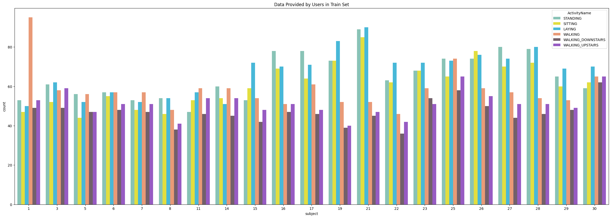
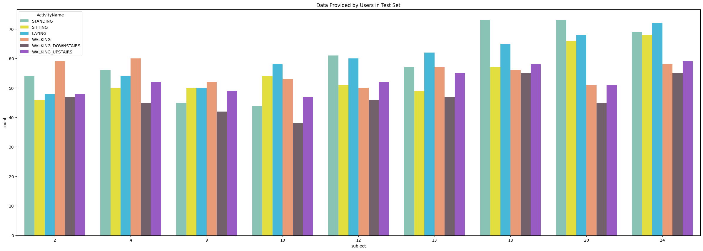
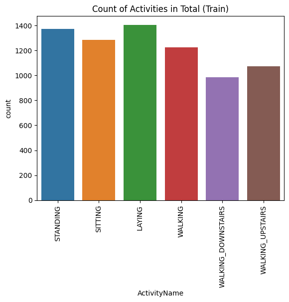
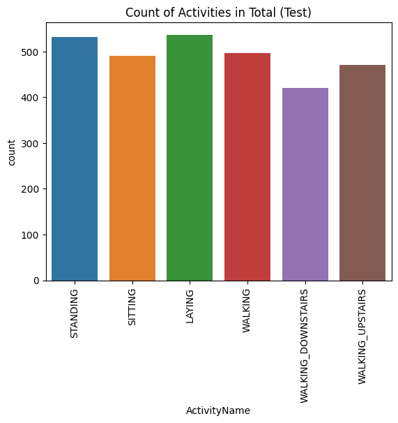

import random
import os
seed_value = 42
random.seed(seed_value)
np.random.seed(seed_value)
torch.manual_seed(seed_value)
device = 'cuda' if torch.cuda.is_available() else 'cpu'
device
# torch.use_deterministic_algorithms(True)'cuda'Rishit Jakharia
March 7, 2025
::: {#cell-1 .cell _cell_guid=‘b1076dfc-b9ad-4769-8c92-a6c4dae69d19’ _uuid=‘8f2839f25d086af736a60e9eeb907d3b93b6e0e5’ execution=‘{“iopub.execute_input”:“2024-12-13T05:50:55.402561Z”,“iopub.status.busy”:“2024-12-13T05:50:55.401962Z”,“iopub.status.idle”:“2024-12-13T05:50:55.407609Z”,“shell.execute_reply”:“2024-12-13T05:50:55.406519Z”,“shell.execute_reply.started”:“2024-12-13T05:50:55.402528Z”}’ trusted=‘true’ execution_count=3}
import torch
import torch.nn as nn
import torch.nn.functional as F
import torch.optim as optim
from torch.utils.data import DataLoader, TensorDataset, Dataset
from torchinfo import summary
from tqdm import tqdm
import numpy as np
from sklearn.metrics import confusion_matrix, ConfusionMatrixDisplay
import matplotlib.pyplot as plt
import seaborn as sns
import pandas as pd
from pandas import read_csv:::
import random
import os
seed_value = 42
random.seed(seed_value)
np.random.seed(seed_value)
torch.manual_seed(seed_value)
device = 'cuda' if torch.cuda.is_available() else 'cpu'
device
# torch.use_deterministic_algorithms(True)'cuda'| tBodyAcc_mean_X | tBodyAcc_mean_Y | tBodyAcc_mean_Z | tBodyAcc_std_X | tBodyAcc_std_Y | tBodyAcc_std_Z | tBodyAcc_mad_X | tBodyAcc_mad_Y | tBodyAcc_mad_Z | tBodyAcc_max_X | ... | angletBodyAccMeangravity | angletBodyAccJerkMeangravityMean | angletBodyGyroMeangravityMean | angletBodyGyroJerkMeangravityMean | angleXgravityMean | angleYgravityMean | angleZgravityMean | subject | Activity | ActivityName | |
|---|---|---|---|---|---|---|---|---|---|---|---|---|---|---|---|---|---|---|---|---|---|
| 4525 | 0.283203 | -0.047024 | -0.168986 | 0.384949 | 0.176898 | -0.310332 | 0.381757 | 0.122611 | -0.332984 | 0.465563 | ... | -0.034924 | 0.558036 | 0.258975 | -0.854858 | -0.78433 | 0.22296 | -0.066506 | 22 | 3 | WALKING_DOWNSTAIRS |
1 rows × 564 columns
| tBodyAcc_mean_X | tBodyAcc_mean_Y | tBodyAcc_mean_Z | tBodyAcc_std_X | tBodyAcc_std_Y | tBodyAcc_std_Z | tBodyAcc_mad_X | tBodyAcc_mad_Y | tBodyAcc_mad_Z | tBodyAcc_max_X | ... | angletBodyAccMeangravity | angletBodyAccJerkMeangravityMean | angletBodyGyroMeangravityMean | angletBodyGyroJerkMeangravityMean | angleXgravityMean | angleYgravityMean | angleZgravityMean | subject | Activity | ActivityName | |
|---|---|---|---|---|---|---|---|---|---|---|---|---|---|---|---|---|---|---|---|---|---|
| 718 | 0.3659 | -0.031332 | -0.024079 | 0.183421 | -0.344568 | -0.403268 | 0.09989 | -0.3422 | -0.412337 | 0.4803 | ... | -0.37837 | -0.840289 | -0.864326 | 0.848585 | -0.960939 | 0.116422 | -0.003858 | 9 | 3 | WALKING_DOWNSTAIRS |
1 rows × 564 columns
print('Duplicates in train = {}'.format(sum(train.duplicated())))
print('Duplicates in test = {}'.format(sum(test.duplicated())))
print('Invalid values in train = {}'.format(train.isnull().values.sum()))
print('Invalid values in test = {}'.format(test.isnull().values.sum()))Duplicates in train = 0
Duplicates in test = 0
Invalid values in train = 0
Invalid values in test = 0plt.figure(figsize=(30,10))
sns.countplot(x='subject',hue='ActivityName',palette= ["#7fcdbb","#fdf824","#30c6f0","#fc9264","#755d6b","#9a4ad4"], data = train)
plt.title('Data Provided by Users in Train Set')
plt.show()
plt.figure(figsize=(30,10))
sns.countplot(x='subject',hue='ActivityName',palette= ["#7fcdbb","#fdf824","#30c6f0","#fc9264","#755d6b","#9a4ad4"], data = test)
plt.title('Data Provided by Users in Test Set')
plt.show()
plt.title('Count of Activities in Total (Train)')
sns.countplot(x="ActivityName",data=train)
plt.xticks(rotation=90)
plt.show()
plt.title('Count of Activities in Total (Test)')
sns.countplot(x="ActivityName",data=test)
plt.xticks(rotation=90)
plt.show()
def inertial_signals_load(group, append_before=''):
filepath = append_before + group + '/Inertial Signals/'
filenames = list()
filenames += ['total_acc_x_'+group+'.txt', 'total_acc_y_'+group+'.txt', 'total_acc_z_'+group+'.txt']
filenames += ['body_acc_x_'+group+'.txt', 'body_acc_y_'+group+'.txt', 'body_acc_z_'+group+'.txt']
filenames += ['body_gyro_x_'+group+'.txt', 'body_gyro_y_'+group+'.txt', 'body_gyro_z_'+group+'.txt']
X = train_test_append(filenames, filepath)
y = file_load(append_before + group + '/y_'+group+'.txt')
return X, ydef load_dataset(append_before=''):
trainX, trainy = inertial_signals_load('train', append_before + '/kaggle/input/ucihar-dataset/UCI-HAR Dataset/')
testX, testy = inertial_signals_load('test', append_before + '/kaggle/input/ucihar-dataset/UCI-HAR Dataset/')
trainy = trainy - 1
testy = testy - 1
trainy = pd.get_dummies(trainy[:,0], dtype=int).values
testy = pd.get_dummies(testy[:,0], dtype=int).values
print(trainX.shape, trainy.shape, testX.shape, testy.shape)
return trainX, trainy, testX, testytrainX, trainy, testX, testy = load_dataset()
verbose, epochs, batch_size = 0, 100, 200
n_timesteps = trainX.shape[1]
n_features = trainX.shape[2]
n_outputs = trainy.shape[1]
# n_steps = 4
# n_length = 32
# trainX = trainX.reshape((trainX.shape[0], n_steps, n_length, n_features))
# testX = testX.reshape((testX.shape[0], n_steps, n_length, n_features))
print(trainX.shape,testX.shape)(7352, 128, 9) (7352, 6) (2947, 128, 9) (2947, 6)
(7352, 128, 9) (2947, 128, 9)mean = torch.zeros(128, 9) # Shape (128, 9)
sum_sq = torch.zeros(128, 9) # Shape (128, 9)
total_elements = 0
for batch, _ in train_loader:
batch_size = batch.size(0)
mean += batch.sum(dim=0)
sum_sq += (batch ** 2).sum(dim=0)
total_elements += batch_size
mean /= total_elements # Shape (128, 9)
std = torch.sqrt(sum_sq / total_elements - mean ** 2) # Shape (128, 9)
# print("Mean:", mean)
# print("Standard Deviation:", std)class Normalize:
def __init__(self, mean, std, device=None):
self.mean = mean.to(device) if device else mean
self.std = std.to(device) if device else std
def __call__(self, sample):
if not isinstance(sample, torch.Tensor):
sample = torch.tensor(sample, dtype=torch.float32)
normalized_sample = (sample - self.mean) / self.std
return normalized_sample
class AddNoise:
def __init__(self, noise_level=0.01):
self.noise_level = noise_level
def __call__(self, sample):
noise = torch.randn_like(sample) * self.noise_level
return sample + noiseclass DatasetWithAugmentation(Dataset):
def __init__(self, data, target, transforms=None):
self.data = data
self.target = target
self.transforms = transforms
def __len__(self):
return len(self.data)
def __getitem__(self, idx):
sample = self.data[idx]
target = self.target[idx]
if self.transforms:
for transform in self.transforms:
sample = transform(sample)
return sample, target
normalize_transform = Normalize(torch.Tensor(mean), torch.Tensor(std))
add_noise_transform = AddNoise(noise_level=0.02)
transforms = [normalize_transform, add_noise_transform]
# transforms = [normalize_transform]
train_dataset = DatasetWithAugmentation(trainX, trainy, transforms=transforms)
test_dataset = DatasetWithAugmentation(testX, testy, transforms=transforms)
train_loader = DataLoader(train_dataset, batch_size=BATCH, shuffle=True)
test_loader = DataLoader(test_dataset, batch_size=BATCH, shuffle=False)def kl_divergence_loss(preds, targets):
targets = targets.float()
preds = F.softmax(preds, dim=-1)
targets = F.softmax(targets, dim=-1)
loss = F.kl_div(preds.log(), targets, reduction='batchmean')
return loss
def mse_loss(preds, targets):
# Ensure that the predictions and targets are one-hot encoded
preds = F.softmax(preds, dim=-1)
return F.mse_loss(preds, targets)
# Focal Loss
def focal_loss(preds, targets, alpha=0.25, gamma=2.0):
"""
Focal Loss for multi-class classification.
Arguments:
preds -- the raw logits from the model (shape: [batch_size, num_classes])
targets -- the true labels (shape: [batch_size])
alpha -- balancing factor for class imbalances (default is 0.25)
gamma -- focusing parameter (default is 2.0)
Returns:
loss -- the computed focal loss
"""
# Apply softmax to get probabilities
preds = F.softmax(preds, dim=-1)
# Convert targets to one-hot encoding
targets_one_hot = targets
# Cross-entropy loss
ce_loss = F.cross_entropy(preds, targets, reduction='none')
# Get the predicted probability for the correct class
pt = torch.exp(-ce_loss)
# Compute focal loss
focal_loss = alpha * (1 - pt) ** gamma * ce_loss
return focal_loss.mean()
# criterion = nn.CrossEntropyLoss() # -> 96.89% 93.55%
# criterion = kl_divergence_loss # -> 99.09% 94.81%
# criterion = mse_loss # -> 96.27% 92.94%
# criterion = nn.CrossEntropyLoss(label_smoothing=0.1) # -> 97.43% 94.06%
# criterion = focal_loss # -> 97.27% 93.32%# Plot history
def plot_history(history):
epochs = range(1, len(history['train_loss']) + 1)
plt.figure(figsize=(12, 4))
# Loss plot
plt.subplot(1, 2, 1)
plt.plot(epochs, history['train_loss'], label='Train Loss')
plt.plot(epochs, history['val_loss'], label='Validation Loss')
plt.xlabel('Epochs')
plt.ylabel('Loss')
plt.legend()
plt.title('Loss History')
# Accuracy plot
plt.subplot(1, 2, 2)
plt.plot(epochs, history['train_acc'], label='Train Accuracy')
plt.plot(epochs, history['val_acc'], label='Validation Accuracy')
plt.xlabel('Epochs')
plt.ylabel('Accuracy')
plt.legend()
plt.title('Accuracy History')
plt.show()def plot_confusion_matrix(model, val_loader, class_names, device="cuda"):
"""
Evaluates the model and plots a confusion matrix with a custom color map.
Arguments:
- model: Trained PyTorch model.
- val_loader: DataLoader for validation dataset.
- class_names: List of class names for the confusion matrix.
- device: 'cuda' or 'cpu'.
"""
model.eval() # Set model to evaluation mode
all_preds = []
all_labels = []
with torch.no_grad(): # Disable gradient computation
for inputs, labels in val_loader:
inputs, labels = inputs.to(device), labels.to(device)
# Forward pass
outputs = model(inputs)
preds = torch.argmax(outputs, dim=1) # Predicted classes
# If labels are one-hot encoded, convert them to class indices
if len(labels.shape) > 1 and labels.size(1) > 1:
labels = torch.argmax(labels, dim=1)
all_preds.extend(preds.cpu().numpy())
all_labels.extend(labels.cpu().numpy())
# Compute confusion matrix
cm = confusion_matrix(all_labels, all_preds, labels=np.arange(len(class_names)))
disp = ConfusionMatrixDisplay(confusion_matrix=cm, display_labels=class_names)
# Plot the confusion matrix with customization
fig, ax = plt.subplots(figsize=(10, 8)) # Set larger figure size
disp.plot(cmap="YlGnBu", ax=ax, colorbar=True) # Use "cividis" colormap and add colorbar
plt.title("Confusion Matrix", fontsize=16)
plt.xticks(fontsize=12, rotation=45)
plt.yticks(fontsize=12)
plt.show()def train_model(model, train_loader, val_loader, criterion=None, optimizer=None, scheduler=None, epochs=20, device='cpu', early_stopping=False, save_path='best_model.pth'):
history = {'train_loss': [], 'val_loss': [], 'train_acc': [], 'val_acc': []}
patience = 20
min_delta = 1e-3
best_loss = np.inf
best_acc = -np.inf
patience_counter = 0
best_model_state = None # Store the best model in memory
if criterion is None:
criterion = F.mse_loss
_criterion = criterion
for epoch in range(epochs):
model.train()
train_loss, train_correct = 0.0, 0
# Training phase
with tqdm(train_loader, desc=f"Epoch {epoch+1}/{epochs} - Training", unit="batch") as tepoch:
for inputs, targets in tepoch:
inputs = inputs.to(device)
targets = targets.to(device)
optimizer.zero_grad()
outputs = model(inputs)
loss = _criterion(outputs, targets)
loss.backward()
optimizer.step()
train_loss += loss.item() * inputs.size(0)
train_correct += (outputs.argmax(1) == targets.argmax(1)).sum().item()
tepoch.set_postfix(loss=loss.item())
if scheduler is not None:
scheduler.step()
train_loss /= len(train_loader.dataset)
train_acc = train_correct / len(train_loader.dataset)
# Validation phase
model.eval()
val_loss, val_correct = 0.0, 0
with torch.no_grad():
with tqdm(val_loader, desc=f"Epoch {epoch+1}/{epochs} - Validation", unit="batch") as vepoch:
for inputs, targets in vepoch:
inputs = inputs.to(device)
targets = targets.to(device)
outputs = model(inputs)
loss = criterion(outputs, targets)
val_loss += loss.item() * inputs.size(0)
val_correct += (outputs.argmax(1) == targets.argmax(1)).sum().item()
vepoch.set_postfix(loss=loss.item())
val_loss /= len(val_loader.dataset)
val_acc = val_correct / len(val_loader.dataset)
# Save history
history['train_loss'].append(train_loss)
history['val_loss'].append(val_loss)
history['train_acc'].append(train_acc)
history['val_acc'].append(val_acc)
print(f"Epoch {epoch+1}/{epochs} - "
f"Train Loss: {train_loss:.4f}, Train Acc: {train_acc:.4f} - "
f"Val Loss: {val_loss:.4f}, Val Acc: {val_acc:.4f}")
# Update the best model in memory
if best_acc < val_acc - min_delta:
best_loss = val_loss
best_acc = val_acc
patience_counter = 0
best_model_state = model.state_dict()
print(f"New best model found at epoch {epoch+1} with val_loss: {val_loss:.4f}")
else:
patience_counter += 1
# Early stopping
if patience_counter >= patience and early_stopping and epoch > 100:
print("Early stopping triggered!")
break
# Save the best model at the end of training
if best_model_state is not None:
torch.save(best_model_state, save_path)
print(f"Best model saved to {save_path} with val_loss: {best_loss:.4f} and val_acc: {best_acc:.4f}")
return historyclass AdaptiveRNN(nn.Module):
def __init__(self, n_timesteps, n_features, n_outputs):
super(AdaptiveRNN, self).__init__()
# Bi-directional LSTM layer
self.lstm = nn.LSTM(
input_size=n_features,
hidden_size=256,
batch_first=True,
bidirectional=True
)
self.batch_norm = nn.BatchNorm1d(256 * 2)
self.batch_norm1 = nn.BatchNorm1d(128)
# Attention mechanism
self.attention_dense = nn.Linear(256 * 2, 1)
# Fully connected layers
self.fc1 = nn.Linear(256 * 2, 128)
self.fc2 = nn.Linear(128, 64)
self.fc3 = nn.Linear(64, n_outputs)
self.dropout = nn.Dropout(0.5)
def forward(self, x):
# LSTM output
lstm_out, _ = self.lstm(x) # lstm_out shape: (batch_size, timesteps, 128*2)
batch_size, n_timesteps, n_features = lstm_out.size()
lstm_out = lstm_out.reshape(batch_size * n_timesteps, n_features)
lstm_out = self.batch_norm(lstm_out)
lstm_out = lstm_out.reshape(batch_size, n_timesteps, n_features)
# Attention mechanism
attention_scores = torch.sigmoid(self.attention_dense(lstm_out)) # (batch_size, timesteps, 1)
attention_scores = lstm_out * attention_scores # Weighted timesteps
# Global average pooling
pooled = attention_scores.mean(dim=1)
# Fully connected layers
x = F.relu(self.fc1(pooled))
x = self.batch_norm1(x)
x = self.dropout(x)
x = F.relu(self.fc2(x))
x = self.fc3(x)
return F.softmax(x, dim=1)# Define the model parameters
n_timesteps = 32 * 4 # 128 timesteps
n_features = 9
n_outputs = 6
# Create the model
model = AdaptiveRNN(n_timesteps=n_timesteps, n_features=n_features, n_outputs=n_outputs).to(device)
summary(model)=================================================================
Layer (type:depth-idx) Param #
=================================================================
AdaptiveRNN --
├─LSTM: 1-1 546,816
├─BatchNorm1d: 1-2 1,024
├─BatchNorm1d: 1-3 256
├─Linear: 1-4 513
├─Linear: 1-5 65,664
├─Linear: 1-6 8,256
├─Linear: 1-7 390
├─Dropout: 1-8 --
=================================================================
Total params: 622,919
Trainable params: 622,919
Non-trainable params: 0
=================================================================optimizer = optim.Adam(model.parameters(), lr=0.001)
scheduler = optim.lr_scheduler.CosineAnnealingLR(optimizer, T_max=50, eta_min=1e-6)
# loss_fn = lambda inputs, targets: 0.9*kl_divergence_loss(inputs, targets) + 0.1*nn.CrossEntropyLoss()(inputs.float(), targets.float())
history = train_model(model, train_loader, test_loader, optimizer=optimizer, criterion=kl_divergence_loss, epochs=150, device=device, early_stopping=True)Epoch 1/150 - Training: 100%|██████████| 29/29 [00:01<00:00, 16.51batch/s, loss=0.00351]
Epoch 1/150 - Validation: 100%|██████████| 12/12 [00:00<00:00, 32.06batch/s, loss=-7.78e-8]Epoch 1/150 - Train Loss: 0.0020, Train Acc: 0.9879 - Val Loss: 0.0067, Val Acc: 0.9600
New best model found at epoch 1 with val_loss: 0.0067Epoch 2/150 - Training: 100%|██████████| 29/29 [00:01<00:00, 16.53batch/s, loss=0.00333]
Epoch 2/150 - Validation: 100%|██████████| 12/12 [00:00<00:00, 31.61batch/s, loss=5.67e-7]Epoch 2/150 - Train Loss: 0.0016, Train Acc: 0.9917 - Val Loss: 0.0069, Val Acc: 0.9617
New best model found at epoch 2 with val_loss: 0.0069Epoch 3/150 - Training: 100%|██████████| 29/29 [00:01<00:00, 16.70batch/s, loss=2.36e-5]
Epoch 3/150 - Validation: 100%|██████████| 12/12 [00:00<00:00, 32.19batch/s, loss=-5.85e-8]Epoch 3/150 - Train Loss: 0.0014, Train Acc: 0.9921 - Val Loss: 0.0056, Val Acc: 0.9678
New best model found at epoch 3 with val_loss: 0.0056Epoch 4/150 - Training: 100%|██████████| 29/29 [00:01<00:00, 16.92batch/s, loss=0.00196]
Epoch 4/150 - Validation: 100%|██████████| 12/12 [00:00<00:00, 32.51batch/s, loss=7.7e-7] Epoch 4/150 - Train Loss: 0.0013, Train Acc: 0.9927 - Val Loss: 0.0075, Val Acc: 0.9593Epoch 5/150 - Training: 100%|██████████| 29/29 [00:01<00:00, 16.81batch/s, loss=0.00115]
Epoch 5/150 - Validation: 100%|██████████| 12/12 [00:00<00:00, 32.43batch/s, loss=5.62e-8]Epoch 5/150 - Train Loss: 0.0011, Train Acc: 0.9939 - Val Loss: 0.0068, Val Acc: 0.9613Epoch 6/150 - Training: 100%|██████████| 29/29 [00:01<00:00, 16.65batch/s, loss=0.000549]
Epoch 6/150 - Validation: 100%|██████████| 12/12 [00:00<00:00, 31.41batch/s, loss=4.15e-5]Epoch 6/150 - Train Loss: 0.0013, Train Acc: 0.9929 - Val Loss: 0.0080, Val Acc: 0.9559Epoch 7/150 - Training: 100%|██████████| 29/29 [00:01<00:00, 16.51batch/s, loss=0.000857]
Epoch 7/150 - Validation: 100%|██████████| 12/12 [00:00<00:00, 30.76batch/s, loss=-6.1e-8]Epoch 7/150 - Train Loss: 0.0013, Train Acc: 0.9929 - Val Loss: 0.0072, Val Acc: 0.9596Epoch 8/150 - Training: 100%|██████████| 29/29 [00:01<00:00, 16.48batch/s, loss=0.000464]
Epoch 8/150 - Validation: 100%|██████████| 12/12 [00:00<00:00, 32.35batch/s, loss=-3.55e-8]Epoch 8/150 - Train Loss: 0.0016, Train Acc: 0.9908 - Val Loss: 0.0059, Val Acc: 0.9667Epoch 9/150 - Training: 100%|██████████| 29/29 [00:01<00:00, 16.50batch/s, loss=0.00216]
Epoch 9/150 - Validation: 100%|██████████| 12/12 [00:00<00:00, 31.94batch/s, loss=-7.62e-8]Epoch 9/150 - Train Loss: 0.0016, Train Acc: 0.9905 - Val Loss: 0.0077, Val Acc: 0.9579Epoch 10/150 - Training: 100%|██████████| 29/29 [00:01<00:00, 16.65batch/s, loss=0.00201]
Epoch 10/150 - Validation: 100%|██████████| 12/12 [00:00<00:00, 32.08batch/s, loss=-7.14e-8]Epoch 10/150 - Train Loss: 0.0016, Train Acc: 0.9903 - Val Loss: 0.0068, Val Acc: 0.9627Epoch 11/150 - Training: 100%|██████████| 29/29 [00:01<00:00, 16.61batch/s, loss=0.0029]
Epoch 11/150 - Validation: 100%|██████████| 12/12 [00:00<00:00, 32.43batch/s, loss=-7.94e-8]Epoch 11/150 - Train Loss: 0.0016, Train Acc: 0.9914 - Val Loss: 0.0070, Val Acc: 0.9596Epoch 12/150 - Training: 100%|██████████| 29/29 [00:01<00:00, 16.60batch/s, loss=0.00197]
Epoch 12/150 - Validation: 100%|██████████| 12/12 [00:00<00:00, 32.39batch/s, loss=-7.51e-8]Epoch 12/150 - Train Loss: 0.0015, Train Acc: 0.9914 - Val Loss: 0.0073, Val Acc: 0.9576Epoch 13/150 - Training: 100%|██████████| 29/29 [00:01<00:00, 16.68batch/s, loss=0.00155]
Epoch 13/150 - Validation: 100%|██████████| 12/12 [00:00<00:00, 32.26batch/s, loss=-5.12e-8]Epoch 13/150 - Train Loss: 0.0015, Train Acc: 0.9909 - Val Loss: 0.0075, Val Acc: 0.9559Epoch 14/150 - Training: 100%|██████████| 29/29 [00:01<00:00, 16.63batch/s, loss=0.00081]
Epoch 14/150 - Validation: 100%|██████████| 12/12 [00:00<00:00, 32.66batch/s, loss=-4.35e-8]Epoch 14/150 - Train Loss: 0.0017, Train Acc: 0.9908 - Val Loss: 0.0069, Val Acc: 0.9640Epoch 15/150 - Training: 100%|██████████| 29/29 [00:01<00:00, 16.67batch/s, loss=0.00115]
Epoch 15/150 - Validation: 100%|██████████| 12/12 [00:00<00:00, 32.27batch/s, loss=-7.58e-8]Epoch 15/150 - Train Loss: 0.0015, Train Acc: 0.9916 - Val Loss: 0.0069, Val Acc: 0.9603Epoch 16/150 - Training: 100%|██████████| 29/29 [00:01<00:00, 16.55batch/s, loss=0.00192]
Epoch 16/150 - Validation: 100%|██████████| 12/12 [00:00<00:00, 32.24batch/s, loss=-6.37e-8]Epoch 16/150 - Train Loss: 0.0011, Train Acc: 0.9931 - Val Loss: 0.0074, Val Acc: 0.9606Epoch 17/150 - Training: 100%|██████████| 29/29 [00:01<00:00, 16.62batch/s, loss=0.000373]
Epoch 17/150 - Validation: 100%|██████████| 12/12 [00:00<00:00, 32.37batch/s, loss=-8.53e-8]Epoch 17/150 - Train Loss: 0.0009, Train Acc: 0.9947 - Val Loss: 0.0076, Val Acc: 0.9589Epoch 18/150 - Training: 100%|██████████| 29/29 [00:01<00:00, 16.32batch/s, loss=0.000373]
Epoch 18/150 - Validation: 100%|██████████| 12/12 [00:00<00:00, 30.32batch/s, loss=-7.1e-8]Epoch 18/150 - Train Loss: 0.0006, Train Acc: 0.9966 - Val Loss: 0.0070, Val Acc: 0.9613Epoch 19/150 - Training: 100%|██████████| 29/29 [00:01<00:00, 16.67batch/s, loss=0.00177]
Epoch 19/150 - Validation: 100%|██████████| 12/12 [00:00<00:00, 32.62batch/s, loss=-4.96e-8]Epoch 19/150 - Train Loss: 0.0011, Train Acc: 0.9943 - Val Loss: 0.0063, Val Acc: 0.9657Epoch 20/150 - Training: 100%|██████████| 29/29 [00:01<00:00, 16.61batch/s, loss=0.000316]
Epoch 20/150 - Validation: 100%|██████████| 12/12 [00:00<00:00, 30.87batch/s, loss=-5.76e-8]Epoch 20/150 - Train Loss: 0.0011, Train Acc: 0.9935 - Val Loss: 0.0074, Val Acc: 0.9586Epoch 21/150 - Training: 100%|██████████| 29/29 [00:01<00:00, 16.74batch/s, loss=0.00199]
Epoch 21/150 - Validation: 100%|██████████| 12/12 [00:00<00:00, 32.15batch/s, loss=-4.48e-8]Epoch 21/150 - Train Loss: 0.0014, Train Acc: 0.9918 - Val Loss: 0.0071, Val Acc: 0.9620Epoch 22/150 - Training: 100%|██████████| 29/29 [00:01<00:00, 16.33batch/s, loss=0.000371]
Epoch 22/150 - Validation: 100%|██████████| 12/12 [00:00<00:00, 32.22batch/s, loss=5.24e-6]Epoch 22/150 - Train Loss: 0.0012, Train Acc: 0.9940 - Val Loss: 0.0076, Val Acc: 0.9572Epoch 23/150 - Training: 100%|██████████| 29/29 [00:01<00:00, 16.59batch/s, loss=0.00077]
Epoch 23/150 - Validation: 100%|██████████| 12/12 [00:00<00:00, 30.96batch/s, loss=3.36e-7]Epoch 23/150 - Train Loss: 0.0007, Train Acc: 0.9963 - Val Loss: 0.0079, Val Acc: 0.9583Epoch 24/150 - Training: 100%|██████████| 29/29 [00:01<00:00, 16.62batch/s, loss=0.00174]
Epoch 24/150 - Validation: 100%|██████████| 12/12 [00:00<00:00, 31.99batch/s, loss=1.71e-7]Epoch 24/150 - Train Loss: 0.0010, Train Acc: 0.9936 - Val Loss: 0.0086, Val Acc: 0.9539Epoch 25/150 - Training: 100%|██████████| 29/29 [00:01<00:00, 16.46batch/s, loss=0.000475]
Epoch 25/150 - Validation: 100%|██████████| 12/12 [00:00<00:00, 31.97batch/s, loss=-5.07e-8]Epoch 25/150 - Train Loss: 0.0011, Train Acc: 0.9933 - Val Loss: 0.0076, Val Acc: 0.9606Epoch 26/150 - Training: 100%|██████████| 29/29 [00:01<00:00, 16.63batch/s, loss=0.00139]
Epoch 26/150 - Validation: 100%|██████████| 12/12 [00:00<00:00, 31.86batch/s, loss=-6.98e-8]Epoch 26/150 - Train Loss: 0.0009, Train Acc: 0.9942 - Val Loss: 0.0066, Val Acc: 0.9644Epoch 27/150 - Training: 100%|██████████| 29/29 [00:01<00:00, 16.66batch/s, loss=0.000834]
Epoch 27/150 - Validation: 100%|██████████| 12/12 [00:00<00:00, 32.40batch/s, loss=3.82e-7]Epoch 27/150 - Train Loss: 0.0006, Train Acc: 0.9961 - Val Loss: 0.0065, Val Acc: 0.9630Epoch 28/150 - Training: 100%|██████████| 29/29 [00:01<00:00, 16.63batch/s, loss=0.000493]
Epoch 28/150 - Validation: 100%|██████████| 12/12 [00:00<00:00, 32.29batch/s, loss=3.3e-7] Epoch 28/150 - Train Loss: 0.0005, Train Acc: 0.9969 - Val Loss: 0.0063, Val Acc: 0.9657Epoch 29/150 - Training: 100%|██████████| 29/29 [00:01<00:00, 16.64batch/s, loss=6.04e-5]
Epoch 29/150 - Validation: 100%|██████████| 12/12 [00:00<00:00, 32.35batch/s, loss=-5.55e-8]Epoch 29/150 - Train Loss: 0.0008, Train Acc: 0.9955 - Val Loss: 0.0063, Val Acc: 0.9637Epoch 30/150 - Training: 100%|██████████| 29/29 [00:01<00:00, 16.52batch/s, loss=4.53e-5]
Epoch 30/150 - Validation: 100%|██████████| 12/12 [00:00<00:00, 32.64batch/s, loss=-7.37e-8]Epoch 30/150 - Train Loss: 0.0006, Train Acc: 0.9963 - Val Loss: 0.0049, Val Acc: 0.9746
New best model found at epoch 30 with val_loss: 0.0049Epoch 31/150 - Training: 100%|██████████| 29/29 [00:01<00:00, 16.68batch/s, loss=0.00561]
Epoch 31/150 - Validation: 100%|██████████| 12/12 [00:00<00:00, 32.49batch/s, loss=-8.55e-8]Epoch 31/150 - Train Loss: 0.0010, Train Acc: 0.9936 - Val Loss: 0.0064, Val Acc: 0.9640Epoch 32/150 - Training: 100%|██████████| 29/29 [00:01<00:00, 16.71batch/s, loss=4.76e-5]
Epoch 32/150 - Validation: 100%|██████████| 12/12 [00:00<00:00, 32.04batch/s, loss=3.81e-6]Epoch 32/150 - Train Loss: 0.0010, Train Acc: 0.9944 - Val Loss: 0.0057, Val Acc: 0.9678Epoch 33/150 - Training: 100%|██████████| 29/29 [00:01<00:00, 16.60batch/s, loss=0.000509]
Epoch 33/150 - Validation: 100%|██████████| 12/12 [00:00<00:00, 31.62batch/s, loss=3.32e-6]Epoch 33/150 - Train Loss: 0.0009, Train Acc: 0.9950 - Val Loss: 0.0071, Val Acc: 0.9637Epoch 34/150 - Training: 100%|██████████| 29/29 [00:01<00:00, 16.66batch/s, loss=0.000317]
Epoch 34/150 - Validation: 100%|██████████| 12/12 [00:00<00:00, 33.93batch/s, loss=2.69e-6]Epoch 34/150 - Train Loss: 0.0007, Train Acc: 0.9961 - Val Loss: 0.0055, Val Acc: 0.9705Epoch 35/150 - Training: 100%|██████████| 29/29 [00:01<00:00, 16.90batch/s, loss=0.000529]
Epoch 35/150 - Validation: 100%|██████████| 12/12 [00:00<00:00, 32.84batch/s, loss=-6.92e-8]Epoch 35/150 - Train Loss: 0.0004, Train Acc: 0.9980 - Val Loss: 0.0054, Val Acc: 0.9718Epoch 36/150 - Training: 100%|██████████| 29/29 [00:01<00:00, 16.98batch/s, loss=0.000713]
Epoch 36/150 - Validation: 100%|██████████| 12/12 [00:00<00:00, 32.35batch/s, loss=-5.32e-8]Epoch 36/150 - Train Loss: 0.0007, Train Acc: 0.9959 - Val Loss: 0.0067, Val Acc: 0.9640Epoch 37/150 - Training: 100%|██████████| 29/29 [00:01<00:00, 16.22batch/s, loss=5.37e-6]
Epoch 37/150 - Validation: 100%|██████████| 12/12 [00:00<00:00, 32.02batch/s, loss=0.000543]Epoch 37/150 - Train Loss: 0.0008, Train Acc: 0.9956 - Val Loss: 0.0078, Val Acc: 0.9589Epoch 38/150 - Training: 100%|██████████| 29/29 [00:01<00:00, 16.54batch/s, loss=0.000445]
Epoch 38/150 - Validation: 100%|██████████| 12/12 [00:00<00:00, 32.16batch/s, loss=-6.55e-8]Epoch 38/150 - Train Loss: 0.0008, Train Acc: 0.9955 - Val Loss: 0.0081, Val Acc: 0.9583Epoch 39/150 - Training: 100%|██████████| 29/29 [00:01<00:00, 16.51batch/s, loss=0.0011]
Epoch 39/150 - Validation: 100%|██████████| 12/12 [00:00<00:00, 32.17batch/s, loss=-6.8e-8]Epoch 39/150 - Train Loss: 0.0009, Train Acc: 0.9946 - Val Loss: 0.0069, Val Acc: 0.9650Epoch 40/150 - Training: 100%|██████████| 29/29 [00:01<00:00, 16.66batch/s, loss=6.38e-5]
Epoch 40/150 - Validation: 100%|██████████| 12/12 [00:00<00:00, 32.23batch/s, loss=1.47e-7]Epoch 40/150 - Train Loss: 0.0009, Train Acc: 0.9942 - Val Loss: 0.0088, Val Acc: 0.9545Epoch 41/150 - Training: 100%|██████████| 29/29 [00:01<00:00, 16.69batch/s, loss=4.41e-6]
Epoch 41/150 - Validation: 100%|██████████| 12/12 [00:00<00:00, 32.26batch/s, loss=-4e-8] Epoch 41/150 - Train Loss: 0.0009, Train Acc: 0.9951 - Val Loss: 0.0071, Val Acc: 0.9630Epoch 42/150 - Training: 100%|██████████| 29/29 [00:01<00:00, 16.62batch/s, loss=0.000219]
Epoch 42/150 - Validation: 100%|██████████| 12/12 [00:00<00:00, 32.40batch/s, loss=-2.66e-8]Epoch 42/150 - Train Loss: 0.0010, Train Acc: 0.9944 - Val Loss: 0.0082, Val Acc: 0.9586Epoch 43/150 - Training: 100%|██████████| 29/29 [00:01<00:00, 16.75batch/s, loss=0.00267]
Epoch 43/150 - Validation: 100%|██████████| 12/12 [00:00<00:00, 32.62batch/s, loss=-5.12e-8]Epoch 43/150 - Train Loss: 0.0006, Train Acc: 0.9969 - Val Loss: 0.0072, Val Acc: 0.9613Epoch 44/150 - Training: 100%|██████████| 29/29 [00:01<00:00, 16.61batch/s, loss=0.000231]
Epoch 44/150 - Validation: 100%|██████████| 12/12 [00:00<00:00, 32.59batch/s, loss=-3.55e-8]Epoch 44/150 - Train Loss: 0.0006, Train Acc: 0.9965 - Val Loss: 0.0081, Val Acc: 0.9576Epoch 45/150 - Training: 100%|██████████| 29/29 [00:01<00:00, 16.71batch/s, loss=0.00116]
Epoch 45/150 - Validation: 100%|██████████| 12/12 [00:00<00:00, 32.59batch/s, loss=-4.39e-8]Epoch 45/150 - Train Loss: 0.0005, Train Acc: 0.9971 - Val Loss: 0.0079, Val Acc: 0.9593Epoch 46/150 - Training: 100%|██████████| 29/29 [00:01<00:00, 16.45batch/s, loss=0.000188]
Epoch 46/150 - Validation: 100%|██████████| 12/12 [00:00<00:00, 30.96batch/s, loss=-4.32e-8]Epoch 46/150 - Train Loss: 0.0005, Train Acc: 0.9970 - Val Loss: 0.0084, Val Acc: 0.9566Epoch 47/150 - Training: 100%|██████████| 29/29 [00:01<00:00, 16.64batch/s, loss=0.00144]
Epoch 47/150 - Validation: 100%|██████████| 12/12 [00:00<00:00, 32.53batch/s, loss=-4.32e-8]Epoch 47/150 - Train Loss: 0.0008, Train Acc: 0.9954 - Val Loss: 0.0077, Val Acc: 0.9562Epoch 48/150 - Training: 100%|██████████| 29/29 [00:01<00:00, 16.66batch/s, loss=8.87e-5]
Epoch 48/150 - Validation: 100%|██████████| 12/12 [00:00<00:00, 32.12batch/s, loss=-4.64e-8]Epoch 48/150 - Train Loss: 0.0006, Train Acc: 0.9965 - Val Loss: 0.0082, Val Acc: 0.9552Epoch 49/150 - Training: 100%|██████████| 29/29 [00:01<00:00, 16.51batch/s, loss=4.17e-5]
Epoch 49/150 - Validation: 100%|██████████| 12/12 [00:00<00:00, 32.93batch/s, loss=-5.14e-8]Epoch 49/150 - Train Loss: 0.0005, Train Acc: 0.9974 - Val Loss: 0.0088, Val Acc: 0.9542Epoch 50/150 - Training: 100%|██████████| 29/29 [00:01<00:00, 16.71batch/s, loss=0.000807]
Epoch 50/150 - Validation: 100%|██████████| 12/12 [00:00<00:00, 32.09batch/s, loss=-4.73e-8]Epoch 50/150 - Train Loss: 0.0004, Train Acc: 0.9974 - Val Loss: 0.0084, Val Acc: 0.9562Epoch 51/150 - Training: 100%|██████████| 29/29 [00:01<00:00, 16.70batch/s, loss=0.000145]
Epoch 51/150 - Validation: 100%|██████████| 12/12 [00:00<00:00, 31.10batch/s, loss=-5.19e-8]Epoch 51/150 - Train Loss: 0.0004, Train Acc: 0.9976 - Val Loss: 0.0089, Val Acc: 0.9535Epoch 52/150 - Training: 100%|██████████| 29/29 [00:01<00:00, 16.45batch/s, loss=0.000894]
Epoch 52/150 - Validation: 100%|██████████| 12/12 [00:00<00:00, 32.81batch/s, loss=-3.78e-8]Epoch 52/150 - Train Loss: 0.0006, Train Acc: 0.9962 - Val Loss: 0.0076, Val Acc: 0.9613Epoch 53/150 - Training: 100%|██████████| 29/29 [00:01<00:00, 16.62batch/s, loss=0.000404]
Epoch 53/150 - Validation: 100%|██████████| 12/12 [00:00<00:00, 30.37batch/s, loss=-3.96e-8]Epoch 53/150 - Train Loss: 0.0004, Train Acc: 0.9976 - Val Loss: 0.0085, Val Acc: 0.9569Epoch 54/150 - Training: 100%|██████████| 29/29 [00:01<00:00, 16.52batch/s, loss=2.88e-5]
Epoch 54/150 - Validation: 100%|██████████| 12/12 [00:00<00:00, 31.75batch/s, loss=-3.98e-8]Epoch 54/150 - Train Loss: 0.0005, Train Acc: 0.9974 - Val Loss: 0.0089, Val Acc: 0.9552Epoch 55/150 - Training: 100%|██████████| 29/29 [00:01<00:00, 16.54batch/s, loss=0.000136]
Epoch 55/150 - Validation: 100%|██████████| 12/12 [00:00<00:00, 32.03batch/s, loss=-1.84e-8]Epoch 55/150 - Train Loss: 0.0007, Train Acc: 0.9962 - Val Loss: 0.0081, Val Acc: 0.9566Epoch 56/150 - Training: 100%|██████████| 29/29 [00:01<00:00, 16.67batch/s, loss=0.000108]
Epoch 56/150 - Validation: 100%|██████████| 12/12 [00:00<00:00, 32.28batch/s, loss=-4.3e-8]Epoch 56/150 - Train Loss: 0.0004, Train Acc: 0.9977 - Val Loss: 0.0086, Val Acc: 0.9569Epoch 57/150 - Training: 100%|██████████| 29/29 [00:01<00:00, 16.62batch/s, loss=0.000356]
Epoch 57/150 - Validation: 100%|██████████| 12/12 [00:00<00:00, 32.51batch/s, loss=-4.87e-8]Epoch 57/150 - Train Loss: 0.0006, Train Acc: 0.9966 - Val Loss: 0.0104, Val Acc: 0.9460Epoch 58/150 - Training: 100%|██████████| 29/29 [00:01<00:00, 16.58batch/s, loss=0.000594]
Epoch 58/150 - Validation: 100%|██████████| 12/12 [00:00<00:00, 32.76batch/s, loss=-4.12e-8]Epoch 58/150 - Train Loss: 0.0010, Train Acc: 0.9944 - Val Loss: 0.0099, Val Acc: 0.9498Epoch 59/150 - Training: 100%|██████████| 29/29 [00:01<00:00, 16.69batch/s, loss=0.000857]
Epoch 59/150 - Validation: 100%|██████████| 12/12 [00:00<00:00, 32.54batch/s, loss=-3.87e-8]Epoch 59/150 - Train Loss: 0.0008, Train Acc: 0.9952 - Val Loss: 0.0094, Val Acc: 0.9518Epoch 60/150 - Training: 100%|██████████| 29/29 [00:01<00:00, 16.77batch/s, loss=8.44e-6]
Epoch 60/150 - Validation: 100%|██████████| 12/12 [00:00<00:00, 32.19batch/s, loss=-5.19e-8]Epoch 60/150 - Train Loss: 0.0006, Train Acc: 0.9965 - Val Loss: 0.0085, Val Acc: 0.9549Epoch 61/150 - Training: 100%|██████████| 29/29 [00:01<00:00, 16.72batch/s, loss=4.92e-6]
Epoch 61/150 - Validation: 100%|██████████| 12/12 [00:00<00:00, 32.05batch/s, loss=-5.57e-8]Epoch 61/150 - Train Loss: 0.0004, Train Acc: 0.9977 - Val Loss: 0.0095, Val Acc: 0.9501Epoch 62/150 - Training: 100%|██████████| 29/29 [00:01<00:00, 16.70batch/s, loss=0.00234]
Epoch 62/150 - Validation: 100%|██████████| 12/12 [00:00<00:00, 32.37batch/s, loss=-3.62e-8]Epoch 62/150 - Train Loss: 0.0011, Train Acc: 0.9944 - Val Loss: 0.0096, Val Acc: 0.9522Epoch 63/150 - Training: 100%|██████████| 29/29 [00:01<00:00, 16.61batch/s, loss=2.66e-5]
Epoch 63/150 - Validation: 100%|██████████| 12/12 [00:00<00:00, 32.70batch/s, loss=-6.48e-8]Epoch 63/150 - Train Loss: 0.0004, Train Acc: 0.9976 - Val Loss: 0.0105, Val Acc: 0.9484Epoch 64/150 - Training: 100%|██████████| 29/29 [00:01<00:00, 16.68batch/s, loss=0.000539]
Epoch 64/150 - Validation: 100%|██████████| 12/12 [00:00<00:00, 32.62batch/s, loss=-7.01e-8]Epoch 64/150 - Train Loss: 0.0007, Train Acc: 0.9961 - Val Loss: 0.0080, Val Acc: 0.9600Epoch 65/150 - Training: 100%|██████████| 29/29 [00:01<00:00, 16.73batch/s, loss=0.000833]
Epoch 65/150 - Validation: 100%|██████████| 12/12 [00:00<00:00, 32.48batch/s, loss=-7.03e-8]Epoch 65/150 - Train Loss: 0.0003, Train Acc: 0.9984 - Val Loss: 0.0090, Val Acc: 0.9545Epoch 66/150 - Training: 100%|██████████| 29/29 [00:01<00:00, 16.59batch/s, loss=5.6e-6]
Epoch 66/150 - Validation: 100%|██████████| 12/12 [00:00<00:00, 30.36batch/s, loss=-5.26e-8]Epoch 66/150 - Train Loss: 0.0004, Train Acc: 0.9980 - Val Loss: 0.0080, Val Acc: 0.9555Epoch 67/150 - Training: 100%|██████████| 29/29 [00:01<00:00, 16.63batch/s, loss=1.87e-5]
Epoch 67/150 - Validation: 100%|██████████| 12/12 [00:00<00:00, 32.40batch/s, loss=-6.05e-8]Epoch 67/150 - Train Loss: 0.0002, Train Acc: 0.9988 - Val Loss: 0.0078, Val Acc: 0.9579Epoch 68/150 - Training: 100%|██████████| 29/29 [00:01<00:00, 16.59batch/s, loss=0.00122]
Epoch 68/150 - Validation: 100%|██████████| 12/12 [00:00<00:00, 32.19batch/s, loss=-5.73e-8]Epoch 68/150 - Train Loss: 0.0004, Train Acc: 0.9981 - Val Loss: 0.0092, Val Acc: 0.9528Epoch 69/150 - Training: 100%|██████████| 29/29 [00:01<00:00, 16.67batch/s, loss=0.00141]
Epoch 69/150 - Validation: 100%|██████████| 12/12 [00:00<00:00, 32.61batch/s, loss=-5.28e-8]Epoch 69/150 - Train Loss: 0.0010, Train Acc: 0.9940 - Val Loss: 0.0091, Val Acc: 0.9542Epoch 70/150 - Training: 100%|██████████| 29/29 [00:01<00:00, 16.64batch/s, loss=9.04e-6]
Epoch 70/150 - Validation: 100%|██████████| 12/12 [00:00<00:00, 31.44batch/s, loss=-5.19e-8]Epoch 70/150 - Train Loss: 0.0008, Train Acc: 0.9956 - Val Loss: 0.0082, Val Acc: 0.9593Epoch 71/150 - Training: 100%|██████████| 29/29 [00:01<00:00, 16.57batch/s, loss=0.000645]
Epoch 71/150 - Validation: 100%|██████████| 12/12 [00:00<00:00, 32.02batch/s, loss=-2.66e-8]Epoch 71/150 - Train Loss: 0.0006, Train Acc: 0.9958 - Val Loss: 0.0075, Val Acc: 0.9613Epoch 72/150 - Training: 100%|██████████| 29/29 [00:01<00:00, 16.59batch/s, loss=0.00379]
Epoch 72/150 - Validation: 100%|██████████| 12/12 [00:00<00:00, 30.84batch/s, loss=-5.62e-8]Epoch 72/150 - Train Loss: 0.0010, Train Acc: 0.9944 - Val Loss: 0.0075, Val Acc: 0.9593Epoch 73/150 - Training: 100%|██████████| 29/29 [00:01<00:00, 16.64batch/s, loss=9.18e-5]
Epoch 73/150 - Validation: 100%|██████████| 12/12 [00:00<00:00, 32.90batch/s, loss=-5.16e-8]Epoch 73/150 - Train Loss: 0.0011, Train Acc: 0.9932 - Val Loss: 0.0077, Val Acc: 0.9600Epoch 74/150 - Training: 100%|██████████| 29/29 [00:01<00:00, 16.69batch/s, loss=0.00232]
Epoch 74/150 - Validation: 100%|██████████| 12/12 [00:00<00:00, 30.80batch/s, loss=-3.57e-8]Epoch 74/150 - Train Loss: 0.0010, Train Acc: 0.9936 - Val Loss: 0.0079, Val Acc: 0.9586Epoch 75/150 - Training: 100%|██████████| 29/29 [00:01<00:00, 16.17batch/s, loss=0.000876]
Epoch 75/150 - Validation: 100%|██████████| 12/12 [00:00<00:00, 31.91batch/s, loss=-4.05e-8]Epoch 75/150 - Train Loss: 0.0009, Train Acc: 0.9948 - Val Loss: 0.0095, Val Acc: 0.9491Epoch 76/150 - Training: 100%|██████████| 29/29 [00:01<00:00, 16.69batch/s, loss=6.31e-6]
Epoch 76/150 - Validation: 100%|██████████| 12/12 [00:00<00:00, 32.40batch/s, loss=-4.46e-8]Epoch 76/150 - Train Loss: 0.0006, Train Acc: 0.9966 - Val Loss: 0.0089, Val Acc: 0.9545Epoch 77/150 - Training: 100%|██████████| 29/29 [00:01<00:00, 16.45batch/s, loss=0.00198]
Epoch 77/150 - Validation: 100%|██████████| 12/12 [00:00<00:00, 32.25batch/s, loss=-4.73e-8]Epoch 77/150 - Train Loss: 0.0006, Train Acc: 0.9962 - Val Loss: 0.0088, Val Acc: 0.9566Epoch 78/150 - Training: 100%|██████████| 29/29 [00:01<00:00, 16.62batch/s, loss=0.00113]
Epoch 78/150 - Validation: 100%|██████████| 12/12 [00:00<00:00, 32.11batch/s, loss=-6.37e-8]Epoch 78/150 - Train Loss: 0.0005, Train Acc: 0.9967 - Val Loss: 0.0088, Val Acc: 0.9555Epoch 79/150 - Training: 100%|██████████| 29/29 [00:01<00:00, 16.67batch/s, loss=0.000288]
Epoch 79/150 - Validation: 100%|██████████| 12/12 [00:00<00:00, 31.86batch/s, loss=-5.78e-8]Epoch 79/150 - Train Loss: 0.0005, Train Acc: 0.9971 - Val Loss: 0.0080, Val Acc: 0.9576Epoch 80/150 - Training: 100%|██████████| 29/29 [00:01<00:00, 16.70batch/s, loss=0.00184]
Epoch 80/150 - Validation: 100%|██████████| 12/12 [00:00<00:00, 32.47batch/s, loss=-7.85e-8]Epoch 80/150 - Train Loss: 0.0005, Train Acc: 0.9974 - Val Loss: 0.0090, Val Acc: 0.9535Epoch 81/150 - Training: 100%|██████████| 29/29 [00:01<00:00, 16.41batch/s, loss=0.000388]
Epoch 81/150 - Validation: 100%|██████████| 12/12 [00:00<00:00, 29.96batch/s, loss=3.44e-7] Epoch 81/150 - Train Loss: 0.0009, Train Acc: 0.9952 - Val Loss: 0.0096, Val Acc: 0.9491Epoch 82/150 - Training: 100%|██████████| 29/29 [00:01<00:00, 16.28batch/s, loss=0.000401]
Epoch 82/150 - Validation: 100%|██████████| 12/12 [00:00<00:00, 31.90batch/s, loss=-6.53e-8]Epoch 82/150 - Train Loss: 0.0005, Train Acc: 0.9974 - Val Loss: 0.0093, Val Acc: 0.9532Epoch 83/150 - Training: 100%|██████████| 29/29 [00:01<00:00, 16.69batch/s, loss=0.000519]
Epoch 83/150 - Validation: 100%|██████████| 12/12 [00:00<00:00, 31.48batch/s, loss=6.79e-6]Epoch 83/150 - Train Loss: 0.0007, Train Acc: 0.9954 - Val Loss: 0.0078, Val Acc: 0.9617Epoch 84/150 - Training: 100%|██████████| 29/29 [00:01<00:00, 16.55batch/s, loss=1.21e-5]
Epoch 84/150 - Validation: 100%|██████████| 12/12 [00:00<00:00, 31.65batch/s, loss=-4.07e-8]Epoch 84/150 - Train Loss: 0.0005, Train Acc: 0.9974 - Val Loss: 0.0073, Val Acc: 0.9630Epoch 85/150 - Training: 100%|██████████| 29/29 [00:01<00:00, 16.66batch/s, loss=0.000208]
Epoch 85/150 - Validation: 100%|██████████| 12/12 [00:00<00:00, 31.97batch/s, loss=-5.41e-8]Epoch 85/150 - Train Loss: 0.0002, Train Acc: 0.9985 - Val Loss: 0.0076, Val Acc: 0.9623Epoch 86/150 - Training: 100%|██████████| 29/29 [00:01<00:00, 16.56batch/s, loss=0.000375]
Epoch 86/150 - Validation: 100%|██████████| 12/12 [00:00<00:00, 30.83batch/s, loss=-6.07e-8]Epoch 86/150 - Train Loss: 0.0002, Train Acc: 0.9985 - Val Loss: 0.0071, Val Acc: 0.9634Epoch 87/150 - Training: 100%|██████████| 29/29 [00:01<00:00, 16.59batch/s, loss=5.34e-5]
Epoch 87/150 - Validation: 100%|██████████| 12/12 [00:00<00:00, 32.50batch/s, loss=-6.32e-8]Epoch 87/150 - Train Loss: 0.0002, Train Acc: 0.9990 - Val Loss: 0.0071, Val Acc: 0.9650Epoch 88/150 - Training: 100%|██████████| 29/29 [00:01<00:00, 16.71batch/s, loss=0.00266]
Epoch 88/150 - Validation: 100%|██████████| 12/12 [00:00<00:00, 32.23batch/s, loss=-6.98e-8]Epoch 88/150 - Train Loss: 0.0004, Train Acc: 0.9973 - Val Loss: 0.0059, Val Acc: 0.9691Epoch 89/150 - Training: 100%|██████████| 29/29 [00:01<00:00, 16.71batch/s, loss=7.01e-5]
Epoch 89/150 - Validation: 100%|██████████| 12/12 [00:00<00:00, 32.29batch/s, loss=-7.96e-8]Epoch 89/150 - Train Loss: 0.0005, Train Acc: 0.9974 - Val Loss: 0.0073, Val Acc: 0.9627Epoch 90/150 - Training: 100%|██████████| 29/29 [00:01<00:00, 16.67batch/s, loss=0.000948]
Epoch 90/150 - Validation: 100%|██████████| 12/12 [00:00<00:00, 32.57batch/s, loss=-7.62e-8]Epoch 90/150 - Train Loss: 0.0003, Train Acc: 0.9982 - Val Loss: 0.0077, Val Acc: 0.9600Epoch 91/150 - Training: 100%|██████████| 29/29 [00:01<00:00, 16.63batch/s, loss=5.78e-6]
Epoch 91/150 - Validation: 100%|██████████| 12/12 [00:00<00:00, 32.20batch/s, loss=-7.87e-8]Epoch 91/150 - Train Loss: 0.0004, Train Acc: 0.9980 - Val Loss: 0.0069, Val Acc: 0.9644Epoch 92/150 - Training: 100%|██████████| 29/29 [00:01<00:00, 16.64batch/s, loss=5.95e-6]
Epoch 92/150 - Validation: 100%|██████████| 12/12 [00:00<00:00, 32.32batch/s, loss=-6.23e-8]Epoch 92/150 - Train Loss: 0.0002, Train Acc: 0.9988 - Val Loss: 0.0071, Val Acc: 0.9617Epoch 93/150 - Training: 100%|██████████| 29/29 [00:01<00:00, 16.62batch/s, loss=5.12e-5]
Epoch 93/150 - Validation: 100%|██████████| 12/12 [00:00<00:00, 31.94batch/s, loss=-5.91e-8]Epoch 93/150 - Train Loss: 0.0003, Train Acc: 0.9981 - Val Loss: 0.0074, Val Acc: 0.9596Epoch 94/150 - Training: 100%|██████████| 29/29 [00:01<00:00, 16.62batch/s, loss=0.000534]
Epoch 94/150 - Validation: 100%|██████████| 12/12 [00:00<00:00, 32.36batch/s, loss=-4.64e-8]Epoch 94/150 - Train Loss: 0.0003, Train Acc: 0.9982 - Val Loss: 0.0076, Val Acc: 0.9617Epoch 95/150 - Training: 100%|██████████| 29/29 [00:01<00:00, 16.63batch/s, loss=3.7e-5]
Epoch 95/150 - Validation: 100%|██████████| 12/12 [00:00<00:00, 32.41batch/s, loss=-6.3e-8]Epoch 95/150 - Train Loss: 0.0002, Train Acc: 0.9988 - Val Loss: 0.0093, Val Acc: 0.9542Epoch 96/150 - Training: 100%|██████████| 29/29 [00:01<00:00, 16.31batch/s, loss=3.83e-5]
Epoch 96/150 - Validation: 100%|██████████| 12/12 [00:00<00:00, 32.22batch/s, loss=-4.66e-8]Epoch 96/150 - Train Loss: 0.0004, Train Acc: 0.9981 - Val Loss: 0.0083, Val Acc: 0.9572Epoch 97/150 - Training: 100%|██████████| 29/29 [00:01<00:00, 16.62batch/s, loss=9.67e-5]
Epoch 97/150 - Validation: 100%|██████████| 12/12 [00:00<00:00, 32.03batch/s, loss=-6.76e-8]Epoch 97/150 - Train Loss: 0.0006, Train Acc: 0.9963 - Val Loss: 0.0078, Val Acc: 0.9593Epoch 98/150 - Training: 100%|██████████| 29/29 [00:01<00:00, 16.70batch/s, loss=9.24e-7]
Epoch 98/150 - Validation: 100%|██████████| 12/12 [00:00<00:00, 32.52batch/s, loss=-5.53e-8]Epoch 98/150 - Train Loss: 0.0003, Train Acc: 0.9984 - Val Loss: 0.0081, Val Acc: 0.9589Epoch 99/150 - Training: 100%|██████████| 29/29 [00:01<00:00, 16.59batch/s, loss=5.79e-5]
Epoch 99/150 - Validation: 100%|██████████| 12/12 [00:00<00:00, 32.43batch/s, loss=-6.73e-8]Epoch 99/150 - Train Loss: 0.0002, Train Acc: 0.9990 - Val Loss: 0.0080, Val Acc: 0.9610Epoch 100/150 - Training: 100%|██████████| 29/29 [00:01<00:00, 16.56batch/s, loss=1.08e-7]
Epoch 100/150 - Validation: 100%|██████████| 12/12 [00:00<00:00, 30.99batch/s, loss=-6.69e-8]Epoch 100/150 - Train Loss: 0.0002, Train Acc: 0.9992 - Val Loss: 0.0073, Val Acc: 0.9647Epoch 101/150 - Training: 100%|██████████| 29/29 [00:01<00:00, 16.67batch/s, loss=9.35e-6]
Epoch 101/150 - Validation: 100%|██████████| 12/12 [00:00<00:00, 31.78batch/s, loss=-5.69e-8]Epoch 101/150 - Train Loss: 0.0001, Train Acc: 0.9995 - Val Loss: 0.0074, Val Acc: 0.9613Epoch 102/150 - Training: 100%|██████████| 29/29 [00:01<00:00, 16.66batch/s, loss=0.00114]
Epoch 102/150 - Validation: 100%|██████████| 12/12 [00:00<00:00, 31.79batch/s, loss=2.98e-7]Epoch 102/150 - Train Loss: 0.0003, Train Acc: 0.9986 - Val Loss: 0.0074, Val Acc: 0.9627
Early stopping triggered!
Best model saved to best_model.pth with val_loss: 0.0049 and val_acc: 0.9746best_model = AdaptiveRNN(n_timesteps=n_timesteps, n_features=n_features, n_outputs=n_outputs).to(device)
best_model.load_state_dict(torch.load('best_model.pth', weights_only = True))
val_correct = 0.0
with torch.no_grad():
for input, target in test_loader:
input = input.to(device)
target = target.to(device)
outputs = best_model(input)
val_correct += (outputs.argmax(1) == target.argmax(1)).sum().item()
print(f"val_acc: {val_correct / len(test_loader.dataset)}")val_acc: 0.9613165931455717class TCNBlock(nn.Module):
def __init__(self, in_channels, out_channels, kernel_size, dilation_rate):
super(TCNBlock, self).__init__()
self.conv1 = nn.Conv1d(
in_channels,
out_channels,
kernel_size,
padding='same',
dilation=dilation_rate
)
self.batch_norm = nn.BatchNorm1d(out_channels)
# Residual connection
if in_channels != out_channels:
self.shortcut = nn.Conv1d(in_channels, out_channels, kernel_size=1)
else:
self.shortcut = None
def forward(self, x):
out = F.relu(self.conv1(x))
out = self.batch_norm(out)
shortcut = self.shortcut(x) if self.shortcut is not None else x
return F.relu(out + shortcut)
class TCNModel(nn.Module):
def __init__(self, n_length, n_features, n_outputs):
super(TCNModel, self).__init__()
self.tcn_blocks = nn.Sequential(
TCNBlock(n_features, 64, kernel_size=3, dilation_rate=1),
TCNBlock(64, 128, kernel_size=3, dilation_rate=2),
TCNBlock(128, 256, kernel_size=3, dilation_rate=4),
TCNBlock(256, 64, kernel_size=3, dilation_rate=8)
)
self.global_avg_pool = nn.AdaptiveAvgPool1d(1)
self.fc1 = nn.Linear(64, 128)
self.fc2 = nn.Linear(128, 64)
self.fc3 = nn.Linear(64, n_outputs)
self.dropout = nn.Dropout(0.3)
def forward(self, x):
x = x.permute(0, 2, 1) # Convert to (batch_size, n_features, n_length)
x = self.tcn_blocks(x)
x = self.global_avg_pool(x).squeeze(-1) # Global average pooling
x = F.relu(self.fc1(x))
x = self.dropout(x)
x = F.relu(self.fc2(x))
x = self.dropout(x)
x = self.fc3(x)
return F.softmax(x, dim=1)
# Define model parameters
n_length = 128
n_features = 9
n_outputs = 6optimizer = optim.Adam(model.parameters(), lr=0.001)
scheduler = optim.lr_scheduler.CosineAnnealingLR(optimizer, T_max=50, eta_min=1e-6)
loss_fn = lambda inputs, targets: 0.9*kl_divergence_loss(inputs, targets) + 0.1*nn.CrossEntropyLoss()(inputs.float(), targets.float())
history = train_model(model, train_loader, test_loader, optimizer=optimizer, criterion= loss_fn, epochs=150, device=device, early_stopping=True)class ChannelAttention(nn.Module):
def __init__(self, in_channels, reduction_ratio=8):
super(ChannelAttention, self).__init__()
self.avg_pool = nn.AdaptiveAvgPool1d(1)
self.max_pool = nn.AdaptiveMaxPool1d(1)
self.fc1 = nn.Conv1d(in_channels, in_channels // reduction_ratio, kernel_size=1)
self.fc2 = nn.Conv1d(in_channels // reduction_ratio, in_channels, kernel_size=1)
def forward(self, x):
avg_pool = self.avg_pool(x)
max_pool = self.max_pool(x)
avg_out = F.relu(self.fc1(avg_pool))
avg_out = self.fc2(avg_out)
max_out = F.relu(self.fc1(max_pool))
max_out = self.fc2(max_out)
out = avg_out + max_out
return torch.sigmoid(out) * x # Channel attention applied
class SpatialAttention(nn.Module):
def __init__(self, kernel_size=7):
super(SpatialAttention, self).__init__()
self.conv = nn.Conv1d(2, 1, kernel_size=kernel_size, padding=kernel_size//2)
self.sigmoid = nn.Sigmoid()
def forward(self, x):
avg_pool = torch.mean(x, dim=1, keepdim=True)
max_pool, _ = torch.max(x, dim=1, keepdim=True)
x_cat = torch.cat([avg_pool, max_pool], dim=1) # Concatenate along channel dimension
out = self.conv(x_cat)
return self.sigmoid(out) * x # Spatial attention applied
class CBAMBlock(nn.Module):
def __init__(self, in_channels):
super(CBAMBlock, self).__init__()
self.channel_attention = ChannelAttention(in_channels)
self.spatial_attention = SpatialAttention()
def forward(self, x):
x = self.channel_attention(x)
x = self.spatial_attention(x)
return x
class TCNWithCBAM(nn.Module):
def __init__(self, n_length, n_features, n_outputs):
super(TCNWithCBAM, self).__init__()
self.tcn_blocks = nn.Sequential(
TCNBlock(n_features, 64, kernel_size=3, dilation_rate=1),
TCNBlock(64, 128, kernel_size=3, dilation_rate=2),
TCNBlock(128, 256, kernel_size=3, dilation_rate=4),
TCNBlock(256, 256, kernel_size=3, dilation_rate=8)
) # (batch_size, out_channels, n_length)
self.cbam_block = CBAMBlock(256)
self.global_avg_pool = nn.AdaptiveAvgPool1d(1)
self.fc1 = nn.Linear(256, 128)
self.fc2 = nn.Linear(128, 64)
self.fc3 = nn.Linear(64, n_outputs)
self.dropout = nn.Dropout(0.5)
def forward(self, x):
x = x.permute(0, 2, 1) # Convert to (batch_size, n_features, n_length)
x = self.tcn_blocks(x)
# Apply CBAM
x = self.cbam_block(x)
x = self.global_avg_pool(x).squeeze(-1) # Global average pooling
x = F.relu(self.fc1(x))
x = self.dropout(x)
x = F.relu(self.fc2(x))
x = self.dropout(x)
x = self.fc3(x)
return F.softmax(x, dim=1)
# Define model parameters
n_length = 128
n_features = 9
n_outputs = 6=================================================================
Layer (type:depth-idx) Param #
=================================================================
TCNWithCBAM --
├─Sequential: 1-1 --
│ └─TCNBlock: 2-1 --
│ │ └─Conv1d: 3-1 1,792
│ │ └─BatchNorm1d: 3-2 128
│ │ └─Conv1d: 3-3 640
│ └─TCNBlock: 2-2 --
│ │ └─Conv1d: 3-4 24,704
│ │ └─BatchNorm1d: 3-5 256
│ │ └─Conv1d: 3-6 8,320
│ └─TCNBlock: 2-3 --
│ │ └─Conv1d: 3-7 98,560
│ │ └─BatchNorm1d: 3-8 512
│ │ └─Conv1d: 3-9 33,024
│ └─TCNBlock: 2-4 --
│ │ └─Conv1d: 3-10 196,864
│ │ └─BatchNorm1d: 3-11 512
├─CBAMBlock: 1-2 --
│ └─ChannelAttention: 2-5 --
│ │ └─AdaptiveAvgPool1d: 3-12 --
│ │ └─AdaptiveMaxPool1d: 3-13 --
│ │ └─Conv1d: 3-14 8,224
│ │ └─Conv1d: 3-15 8,448
│ └─SpatialAttention: 2-6 --
│ │ └─Conv1d: 3-16 15
│ │ └─Sigmoid: 3-17 --
├─AdaptiveAvgPool1d: 1-3 --
├─Linear: 1-4 32,896
├─Linear: 1-5 8,256
├─Linear: 1-6 390
├─Dropout: 1-7 --
=================================================================
Total params: 423,541
Trainable params: 423,541
Non-trainable params: 0
=================================================================optimizer = optim.Adam(model.parameters(), lr=0.001)
scheduler = optim.lr_scheduler.CosineAnnealingLR(optimizer, T_max=50, eta_min=1e-6)
loss_fn = lambda inputs, targets: 0.9*kl_divergence_loss(inputs, targets) + 0.1*nn.CrossEntropyLoss()(inputs.float(), targets.float())
history = train_model(model, train_loader, test_loader, optimizer=optimizer, criterion= loss_fn, epochs=150, device=device, early_stopping=True)Epoch 1/150 - Training: 100%|██████████| 29/29 [00:01<00:00, 14.79batch/s, loss=0.21]
Epoch 1/150 - Validation: 100%|██████████| 12/12 [00:00<00:00, 40.84batch/s, loss=0.196]Epoch 1/150 - Train Loss: 0.2444, Train Acc: 0.5257 - Val Loss: 0.2193, Val Acc: 0.6895
New best model found at epoch 1 with val_loss: 0.2193Epoch 2/150 - Training: 100%|██████████| 29/29 [00:01<00:00, 23.42batch/s, loss=0.12]
Epoch 2/150 - Validation: 100%|██████████| 12/12 [00:00<00:00, 42.88batch/s, loss=0.105]Epoch 2/150 - Train Loss: 0.1591, Train Acc: 0.8183 - Val Loss: 0.1289, Val Acc: 0.9074
New best model found at epoch 2 with val_loss: 0.1289Epoch 3/150 - Training: 100%|██████████| 29/29 [00:01<00:00, 23.49batch/s, loss=0.121]
Epoch 3/150 - Validation: 100%|██████████| 12/12 [00:00<00:00, 43.27batch/s, loss=0.104]Epoch 3/150 - Train Loss: 0.1181, Train Acc: 0.9529 - Val Loss: 0.1284, Val Acc: 0.9141
New best model found at epoch 3 with val_loss: 0.1284Epoch 4/150 - Training: 100%|██████████| 29/29 [00:01<00:00, 23.61batch/s, loss=0.111]
Epoch 4/150 - Validation: 100%|██████████| 12/12 [00:00<00:00, 39.80batch/s, loss=0.104]Epoch 4/150 - Train Loss: 0.1168, Train Acc: 0.9573 - Val Loss: 0.1287, Val Acc: 0.9138Epoch 5/150 - Training: 100%|██████████| 29/29 [00:01<00:00, 22.32batch/s, loss=0.116]
Epoch 5/150 - Validation: 100%|██████████| 12/12 [00:00<00:00, 43.77batch/s, loss=0.104]Epoch 5/150 - Train Loss: 0.1157, Train Acc: 0.9600 - Val Loss: 0.1277, Val Acc: 0.9175
New best model found at epoch 5 with val_loss: 0.1277Epoch 6/150 - Training: 100%|██████████| 29/29 [00:01<00:00, 23.59batch/s, loss=0.114]
Epoch 6/150 - Validation: 100%|██████████| 12/12 [00:00<00:00, 43.53batch/s, loss=0.104]Epoch 6/150 - Train Loss: 0.1148, Train Acc: 0.9623 - Val Loss: 0.1267, Val Acc: 0.9226
New best model found at epoch 6 with val_loss: 0.1267Epoch 7/150 - Training: 100%|██████████| 29/29 [00:01<00:00, 23.65batch/s, loss=0.118]
Epoch 7/150 - Validation: 100%|██████████| 12/12 [00:00<00:00, 43.28batch/s, loss=0.104]Epoch 7/150 - Train Loss: 0.1148, Train Acc: 0.9633 - Val Loss: 0.1240, Val Acc: 0.9291
New best model found at epoch 7 with val_loss: 0.1240Epoch 8/150 - Training: 100%|██████████| 29/29 [00:01<00:00, 23.45batch/s, loss=0.111]
Epoch 8/150 - Validation: 100%|██████████| 12/12 [00:00<00:00, 42.46batch/s, loss=0.104]Epoch 8/150 - Train Loss: 0.1143, Train Acc: 0.9642 - Val Loss: 0.1269, Val Acc: 0.9158Epoch 9/150 - Training: 100%|██████████| 29/29 [00:01<00:00, 23.71batch/s, loss=0.113]
Epoch 9/150 - Validation: 100%|██████████| 12/12 [00:00<00:00, 43.51batch/s, loss=0.104]Epoch 9/150 - Train Loss: 0.1135, Train Acc: 0.9676 - Val Loss: 0.1267, Val Acc: 0.9182Epoch 10/150 - Training: 100%|██████████| 29/29 [00:01<00:00, 23.45batch/s, loss=0.111]
Epoch 10/150 - Validation: 100%|██████████| 12/12 [00:00<00:00, 42.84batch/s, loss=0.104]Epoch 10/150 - Train Loss: 0.1134, Train Acc: 0.9683 - Val Loss: 0.1244, Val Acc: 0.9253Epoch 11/150 - Training: 100%|██████████| 29/29 [00:01<00:00, 23.62batch/s, loss=0.11]
Epoch 11/150 - Validation: 100%|██████████| 12/12 [00:00<00:00, 42.93batch/s, loss=0.104]Epoch 11/150 - Train Loss: 0.1127, Train Acc: 0.9703 - Val Loss: 0.1244, Val Acc: 0.9257Epoch 12/150 - Training: 100%|██████████| 29/29 [00:01<00:00, 23.71batch/s, loss=0.112]
Epoch 12/150 - Validation: 100%|██████████| 12/12 [00:00<00:00, 43.90batch/s, loss=0.104]Epoch 12/150 - Train Loss: 0.1128, Train Acc: 0.9690 - Val Loss: 0.1231, Val Acc: 0.9311
New best model found at epoch 12 with val_loss: 0.1231Epoch 13/150 - Training: 100%|██████████| 29/29 [00:01<00:00, 23.70batch/s, loss=0.115]
Epoch 13/150 - Validation: 100%|██████████| 12/12 [00:00<00:00, 43.99batch/s, loss=0.104]Epoch 13/150 - Train Loss: 0.1121, Train Acc: 0.9728 - Val Loss: 0.1233, Val Acc: 0.9301Epoch 14/150 - Training: 100%|██████████| 29/29 [00:01<00:00, 23.44batch/s, loss=0.11]
Epoch 14/150 - Validation: 100%|██████████| 12/12 [00:00<00:00, 42.62batch/s, loss=0.104]Epoch 14/150 - Train Loss: 0.1122, Train Acc: 0.9714 - Val Loss: 0.1213, Val Acc: 0.9328
New best model found at epoch 14 with val_loss: 0.1213Epoch 15/150 - Training: 100%|██████████| 29/29 [00:01<00:00, 23.07batch/s, loss=0.12]
Epoch 15/150 - Validation: 100%|██████████| 12/12 [00:00<00:00, 43.12batch/s, loss=0.104]Epoch 15/150 - Train Loss: 0.1116, Train Acc: 0.9725 - Val Loss: 0.1223, Val Acc: 0.9325Epoch 16/150 - Training: 100%|██████████| 29/29 [00:01<00:00, 23.62batch/s, loss=0.113]
Epoch 16/150 - Validation: 100%|██████████| 12/12 [00:00<00:00, 43.27batch/s, loss=0.104]Epoch 16/150 - Train Loss: 0.1111, Train Acc: 0.9761 - Val Loss: 0.1219, Val Acc: 0.9328Epoch 17/150 - Training: 100%|██████████| 29/29 [00:01<00:00, 23.80batch/s, loss=0.105]
Epoch 17/150 - Validation: 100%|██████████| 12/12 [00:00<00:00, 43.56batch/s, loss=0.104]Epoch 17/150 - Train Loss: 0.1114, Train Acc: 0.9752 - Val Loss: 0.1243, Val Acc: 0.9253Epoch 18/150 - Training: 100%|██████████| 29/29 [00:01<00:00, 22.87batch/s, loss=0.115]
Epoch 18/150 - Validation: 100%|██████████| 12/12 [00:00<00:00, 43.74batch/s, loss=0.104]Epoch 18/150 - Train Loss: 0.1127, Train Acc: 0.9710 - Val Loss: 0.1213, Val Acc: 0.9386
New best model found at epoch 18 with val_loss: 0.1213Epoch 19/150 - Training: 100%|██████████| 29/29 [00:01<00:00, 24.21batch/s, loss=0.112]
Epoch 19/150 - Validation: 100%|██████████| 12/12 [00:00<00:00, 43.57batch/s, loss=0.104]Epoch 19/150 - Train Loss: 0.1110, Train Acc: 0.9762 - Val Loss: 0.1199, Val Acc: 0.9433
New best model found at epoch 19 with val_loss: 0.1199Epoch 20/150 - Training: 100%|██████████| 29/29 [00:01<00:00, 23.50batch/s, loss=0.109]
Epoch 20/150 - Validation: 100%|██████████| 12/12 [00:00<00:00, 43.23batch/s, loss=0.104]Epoch 20/150 - Train Loss: 0.1109, Train Acc: 0.9757 - Val Loss: 0.1193, Val Acc: 0.9447
New best model found at epoch 20 with val_loss: 0.1193Epoch 21/150 - Training: 100%|██████████| 29/29 [00:01<00:00, 23.44batch/s, loss=0.112]
Epoch 21/150 - Validation: 100%|██████████| 12/12 [00:00<00:00, 39.01batch/s, loss=0.104]Epoch 21/150 - Train Loss: 0.1112, Train Acc: 0.9754 - Val Loss: 0.1195, Val Acc: 0.9433Epoch 22/150 - Training: 100%|██████████| 29/29 [00:01<00:00, 23.49batch/s, loss=0.106]
Epoch 22/150 - Validation: 100%|██████████| 12/12 [00:00<00:00, 42.77batch/s, loss=0.104]Epoch 22/150 - Train Loss: 0.1109, Train Acc: 0.9767 - Val Loss: 0.1193, Val Acc: 0.9457
New best model found at epoch 22 with val_loss: 0.1193Epoch 23/150 - Training: 100%|██████████| 29/29 [00:01<00:00, 23.58batch/s, loss=0.106]
Epoch 23/150 - Validation: 100%|██████████| 12/12 [00:00<00:00, 43.03batch/s, loss=0.108]Epoch 23/150 - Train Loss: 0.1105, Train Acc: 0.9780 - Val Loss: 0.1230, Val Acc: 0.9304Epoch 24/150 - Training: 100%|██████████| 29/29 [00:01<00:00, 23.61batch/s, loss=0.111]
Epoch 24/150 - Validation: 100%|██████████| 12/12 [00:00<00:00, 42.72batch/s, loss=0.104]Epoch 24/150 - Train Loss: 0.1111, Train Acc: 0.9762 - Val Loss: 0.1226, Val Acc: 0.9348Epoch 25/150 - Training: 100%|██████████| 29/29 [00:01<00:00, 23.49batch/s, loss=0.116]
Epoch 25/150 - Validation: 100%|██████████| 12/12 [00:00<00:00, 43.43batch/s, loss=0.104]Epoch 25/150 - Train Loss: 0.1103, Train Acc: 0.9776 - Val Loss: 0.1226, Val Acc: 0.9325Epoch 26/150 - Training: 100%|██████████| 29/29 [00:01<00:00, 23.57batch/s, loss=0.11]
Epoch 26/150 - Validation: 100%|██████████| 12/12 [00:00<00:00, 41.54batch/s, loss=0.104]Epoch 26/150 - Train Loss: 0.1104, Train Acc: 0.9784 - Val Loss: 0.1212, Val Acc: 0.9420Epoch 27/150 - Training: 100%|██████████| 29/29 [00:01<00:00, 23.49batch/s, loss=0.112]
Epoch 27/150 - Validation: 100%|██████████| 12/12 [00:00<00:00, 42.58batch/s, loss=0.104]Epoch 27/150 - Train Loss: 0.1106, Train Acc: 0.9773 - Val Loss: 0.1214, Val Acc: 0.9382Epoch 28/150 - Training: 100%|██████████| 29/29 [00:01<00:00, 23.44batch/s, loss=0.111]
Epoch 28/150 - Validation: 100%|██████████| 12/12 [00:00<00:00, 42.04batch/s, loss=0.104]Epoch 28/150 - Train Loss: 0.1097, Train Acc: 0.9797 - Val Loss: 0.1203, Val Acc: 0.9413Epoch 29/150 - Training: 100%|██████████| 29/29 [00:01<00:00, 23.51batch/s, loss=0.112]
Epoch 29/150 - Validation: 100%|██████████| 12/12 [00:00<00:00, 42.16batch/s, loss=0.104]Epoch 29/150 - Train Loss: 0.1100, Train Acc: 0.9793 - Val Loss: 0.1214, Val Acc: 0.9372Epoch 30/150 - Training: 100%|██████████| 29/29 [00:01<00:00, 23.72batch/s, loss=0.107]
Epoch 30/150 - Validation: 100%|██████████| 12/12 [00:00<00:00, 42.91batch/s, loss=0.104]Epoch 30/150 - Train Loss: 0.1093, Train Acc: 0.9822 - Val Loss: 0.1213, Val Acc: 0.9406Epoch 31/150 - Training: 100%|██████████| 29/29 [00:01<00:00, 23.63batch/s, loss=0.113]
Epoch 31/150 - Validation: 100%|██████████| 12/12 [00:00<00:00, 42.96batch/s, loss=0.104]Epoch 31/150 - Train Loss: 0.1100, Train Acc: 0.9791 - Val Loss: 0.1238, Val Acc: 0.9311Epoch 32/150 - Training: 100%|██████████| 29/29 [00:01<00:00, 23.68batch/s, loss=0.108]
Epoch 32/150 - Validation: 100%|██████████| 12/12 [00:00<00:00, 43.42batch/s, loss=0.104]Epoch 32/150 - Train Loss: 0.1109, Train Acc: 0.9761 - Val Loss: 0.1218, Val Acc: 0.9386Epoch 33/150 - Training: 100%|██████████| 29/29 [00:01<00:00, 23.74batch/s, loss=0.111]
Epoch 33/150 - Validation: 100%|██████████| 12/12 [00:00<00:00, 42.45batch/s, loss=0.104]Epoch 33/150 - Train Loss: 0.1110, Train Acc: 0.9743 - Val Loss: 0.1201, Val Acc: 0.9444Epoch 34/150 - Training: 100%|██████████| 29/29 [00:01<00:00, 23.56batch/s, loss=0.11]
Epoch 34/150 - Validation: 100%|██████████| 12/12 [00:00<00:00, 41.81batch/s, loss=0.104]Epoch 34/150 - Train Loss: 0.1100, Train Acc: 0.9793 - Val Loss: 0.1199, Val Acc: 0.9450Epoch 35/150 - Training: 100%|██████████| 29/29 [00:01<00:00, 23.21batch/s, loss=0.109]
Epoch 35/150 - Validation: 100%|██████████| 12/12 [00:00<00:00, 42.67batch/s, loss=0.104]Epoch 35/150 - Train Loss: 0.1102, Train Acc: 0.9785 - Val Loss: 0.1245, Val Acc: 0.9304Epoch 36/150 - Training: 100%|██████████| 29/29 [00:01<00:00, 23.58batch/s, loss=0.111]
Epoch 36/150 - Validation: 100%|██████████| 12/12 [00:00<00:00, 42.97batch/s, loss=0.104]Epoch 36/150 - Train Loss: 0.1101, Train Acc: 0.9789 - Val Loss: 0.1255, Val Acc: 0.9237Epoch 37/150 - Training: 100%|██████████| 29/29 [00:01<00:00, 23.60batch/s, loss=0.108]
Epoch 37/150 - Validation: 100%|██████████| 12/12 [00:00<00:00, 42.92batch/s, loss=0.104]Epoch 37/150 - Train Loss: 0.1093, Train Acc: 0.9818 - Val Loss: 0.1248, Val Acc: 0.9247Epoch 38/150 - Training: 100%|██████████| 29/29 [00:01<00:00, 23.32batch/s, loss=0.113]
Epoch 38/150 - Validation: 100%|██████████| 12/12 [00:00<00:00, 38.88batch/s, loss=0.104]Epoch 38/150 - Train Loss: 0.1085, Train Acc: 0.9856 - Val Loss: 0.1245, Val Acc: 0.9277Epoch 39/150 - Training: 100%|██████████| 29/29 [00:01<00:00, 23.32batch/s, loss=0.111]
Epoch 39/150 - Validation: 100%|██████████| 12/12 [00:00<00:00, 43.09batch/s, loss=0.104]Epoch 39/150 - Train Loss: 0.1096, Train Acc: 0.9808 - Val Loss: 0.1239, Val Acc: 0.9325Epoch 40/150 - Training: 100%|██████████| 29/29 [00:01<00:00, 23.62batch/s, loss=0.107]
Epoch 40/150 - Validation: 100%|██████████| 12/12 [00:00<00:00, 43.12batch/s, loss=0.104]Epoch 40/150 - Train Loss: 0.1095, Train Acc: 0.9816 - Val Loss: 0.1215, Val Acc: 0.9379Epoch 41/150 - Training: 100%|██████████| 29/29 [00:01<00:00, 23.41batch/s, loss=0.11]
Epoch 41/150 - Validation: 100%|██████████| 12/12 [00:00<00:00, 42.98batch/s, loss=0.104]Epoch 41/150 - Train Loss: 0.1097, Train Acc: 0.9808 - Val Loss: 0.1224, Val Acc: 0.9355Epoch 42/150 - Training: 100%|██████████| 29/29 [00:01<00:00, 23.60batch/s, loss=0.108]
Epoch 42/150 - Validation: 100%|██████████| 12/12 [00:00<00:00, 43.04batch/s, loss=0.104]Epoch 42/150 - Train Loss: 0.1087, Train Acc: 0.9842 - Val Loss: 0.1219, Val Acc: 0.9372Epoch 43/150 - Training: 100%|██████████| 29/29 [00:01<00:00, 23.66batch/s, loss=0.11]
Epoch 43/150 - Validation: 100%|██████████| 12/12 [00:00<00:00, 43.47batch/s, loss=0.104]Epoch 43/150 - Train Loss: 0.1094, Train Acc: 0.9810 - Val Loss: 0.1191, Val Acc: 0.9460Epoch 44/150 - Training: 100%|██████████| 29/29 [00:01<00:00, 23.41batch/s, loss=0.112]
Epoch 44/150 - Validation: 100%|██████████| 12/12 [00:00<00:00, 40.24batch/s, loss=0.104]Epoch 44/150 - Train Loss: 0.1091, Train Acc: 0.9830 - Val Loss: 0.1230, Val Acc: 0.9318Epoch 45/150 - Training: 100%|██████████| 29/29 [00:01<00:00, 22.59batch/s, loss=0.108]
Epoch 45/150 - Validation: 100%|██████████| 12/12 [00:00<00:00, 42.91batch/s, loss=0.104]Epoch 45/150 - Train Loss: 0.1101, Train Acc: 0.9795 - Val Loss: 0.1261, Val Acc: 0.9226Epoch 46/150 - Training: 100%|██████████| 29/29 [00:01<00:00, 23.51batch/s, loss=0.111]
Epoch 46/150 - Validation: 100%|██████████| 12/12 [00:00<00:00, 43.66batch/s, loss=0.104]Epoch 46/150 - Train Loss: 0.1105, Train Acc: 0.9786 - Val Loss: 0.1220, Val Acc: 0.9369Epoch 47/150 - Training: 100%|██████████| 29/29 [00:01<00:00, 23.43batch/s, loss=0.107]
Epoch 47/150 - Validation: 100%|██████████| 12/12 [00:00<00:00, 42.64batch/s, loss=0.104]Epoch 47/150 - Train Loss: 0.1098, Train Acc: 0.9808 - Val Loss: 0.1231, Val Acc: 0.9328Epoch 48/150 - Training: 100%|██████████| 29/29 [00:01<00:00, 23.05batch/s, loss=0.113]
Epoch 48/150 - Validation: 100%|██████████| 12/12 [00:00<00:00, 41.23batch/s, loss=0.104]Epoch 48/150 - Train Loss: 0.1086, Train Acc: 0.9852 - Val Loss: 0.1226, Val Acc: 0.9345Epoch 49/150 - Training: 100%|██████████| 29/29 [00:01<00:00, 23.49batch/s, loss=0.111]
Epoch 49/150 - Validation: 100%|██████████| 12/12 [00:00<00:00, 43.23batch/s, loss=0.104]Epoch 49/150 - Train Loss: 0.1094, Train Acc: 0.9819 - Val Loss: 0.1254, Val Acc: 0.9243Epoch 50/150 - Training: 100%|██████████| 29/29 [00:01<00:00, 23.27batch/s, loss=0.105]
Epoch 50/150 - Validation: 100%|██████████| 12/12 [00:00<00:00, 42.58batch/s, loss=0.104]Epoch 50/150 - Train Loss: 0.1088, Train Acc: 0.9839 - Val Loss: 0.1264, Val Acc: 0.9223Epoch 51/150 - Training: 100%|██████████| 29/29 [00:01<00:00, 23.35batch/s, loss=0.106]
Epoch 51/150 - Validation: 100%|██████████| 12/12 [00:00<00:00, 42.91batch/s, loss=0.104]Epoch 51/150 - Train Loss: 0.1082, Train Acc: 0.9867 - Val Loss: 0.1242, Val Acc: 0.9321Epoch 52/150 - Training: 100%|██████████| 29/29 [00:01<00:00, 23.65batch/s, loss=0.112]
Epoch 52/150 - Validation: 100%|██████████| 12/12 [00:00<00:00, 42.80batch/s, loss=0.104]Epoch 52/150 - Train Loss: 0.1078, Train Acc: 0.9876 - Val Loss: 0.1242, Val Acc: 0.9301Epoch 53/150 - Training: 100%|██████████| 29/29 [00:01<00:00, 23.66batch/s, loss=0.106]
Epoch 53/150 - Validation: 100%|██████████| 12/12 [00:00<00:00, 43.47batch/s, loss=0.104]Epoch 53/150 - Train Loss: 0.1083, Train Acc: 0.9861 - Val Loss: 0.1246, Val Acc: 0.9287Epoch 54/150 - Training: 100%|██████████| 29/29 [00:01<00:00, 22.75batch/s, loss=0.109]
Epoch 54/150 - Validation: 100%|██████████| 12/12 [00:00<00:00, 43.11batch/s, loss=0.104]Epoch 54/150 - Train Loss: 0.1080, Train Acc: 0.9869 - Val Loss: 0.1289, Val Acc: 0.9155Epoch 55/150 - Training: 100%|██████████| 29/29 [00:01<00:00, 23.52batch/s, loss=0.108]
Epoch 55/150 - Validation: 100%|██████████| 12/12 [00:00<00:00, 42.83batch/s, loss=0.104]Epoch 55/150 - Train Loss: 0.1088, Train Acc: 0.9839 - Val Loss: 0.1245, Val Acc: 0.9298Epoch 56/150 - Training: 100%|██████████| 29/29 [00:01<00:00, 23.71batch/s, loss=0.104]
Epoch 56/150 - Validation: 100%|██████████| 12/12 [00:00<00:00, 43.46batch/s, loss=0.104]Epoch 56/150 - Train Loss: 0.1102, Train Acc: 0.9799 - Val Loss: 0.1203, Val Acc: 0.9447Epoch 57/150 - Training: 100%|██████████| 29/29 [00:01<00:00, 23.64batch/s, loss=0.106]
Epoch 57/150 - Validation: 100%|██████████| 12/12 [00:00<00:00, 43.05batch/s, loss=0.104]Epoch 57/150 - Train Loss: 0.1086, Train Acc: 0.9856 - Val Loss: 0.1222, Val Acc: 0.9386Epoch 58/150 - Training: 100%|██████████| 29/29 [00:01<00:00, 23.64batch/s, loss=0.111]
Epoch 58/150 - Validation: 100%|██████████| 12/12 [00:00<00:00, 42.76batch/s, loss=0.104]Epoch 58/150 - Train Loss: 0.1087, Train Acc: 0.9849 - Val Loss: 0.1192, Val Acc: 0.9484
New best model found at epoch 58 with val_loss: 0.1192Epoch 59/150 - Training: 100%|██████████| 29/29 [00:01<00:00, 22.67batch/s, loss=0.107]
Epoch 59/150 - Validation: 100%|██████████| 12/12 [00:00<00:00, 40.18batch/s, loss=0.104]Epoch 59/150 - Train Loss: 0.1088, Train Acc: 0.9844 - Val Loss: 0.1195, Val Acc: 0.9474Epoch 60/150 - Training: 100%|██████████| 29/29 [00:01<00:00, 23.47batch/s, loss=0.107]
Epoch 60/150 - Validation: 100%|██████████| 12/12 [00:00<00:00, 42.09batch/s, loss=0.104]Epoch 60/150 - Train Loss: 0.1085, Train Acc: 0.9859 - Val Loss: 0.1204, Val Acc: 0.9454Epoch 61/150 - Training: 100%|██████████| 29/29 [00:01<00:00, 23.25batch/s, loss=0.107]
Epoch 61/150 - Validation: 100%|██████████| 12/12 [00:00<00:00, 43.16batch/s, loss=0.104]Epoch 61/150 - Train Loss: 0.1090, Train Acc: 0.9825 - Val Loss: 0.1201, Val Acc: 0.9454Epoch 62/150 - Training: 100%|██████████| 29/29 [00:01<00:00, 24.37batch/s, loss=0.108]
Epoch 62/150 - Validation: 100%|██████████| 12/12 [00:00<00:00, 45.81batch/s, loss=0.104]Epoch 62/150 - Train Loss: 0.1089, Train Acc: 0.9838 - Val Loss: 0.1199, Val Acc: 0.9450Epoch 63/150 - Training: 100%|██████████| 29/29 [00:01<00:00, 24.73batch/s, loss=0.107]
Epoch 63/150 - Validation: 100%|██████████| 12/12 [00:00<00:00, 46.01batch/s, loss=0.104]Epoch 63/150 - Train Loss: 0.1078, Train Acc: 0.9880 - Val Loss: 0.1202, Val Acc: 0.9454Epoch 64/150 - Training: 100%|██████████| 29/29 [00:01<00:00, 24.46batch/s, loss=0.105]
Epoch 64/150 - Validation: 100%|██████████| 12/12 [00:00<00:00, 45.42batch/s, loss=0.104]Epoch 64/150 - Train Loss: 0.1077, Train Acc: 0.9882 - Val Loss: 0.1213, Val Acc: 0.9403Epoch 65/150 - Training: 100%|██████████| 29/29 [00:01<00:00, 23.78batch/s, loss=0.106]
Epoch 65/150 - Validation: 100%|██████████| 12/12 [00:00<00:00, 42.19batch/s, loss=0.104]Epoch 65/150 - Train Loss: 0.1078, Train Acc: 0.9879 - Val Loss: 0.1196, Val Acc: 0.9477Epoch 66/150 - Training: 100%|██████████| 29/29 [00:01<00:00, 23.72batch/s, loss=0.106]
Epoch 66/150 - Validation: 100%|██████████| 12/12 [00:00<00:00, 42.66batch/s, loss=0.104]Epoch 66/150 - Train Loss: 0.1080, Train Acc: 0.9869 - Val Loss: 0.1207, Val Acc: 0.9437Epoch 67/150 - Training: 100%|██████████| 29/29 [00:01<00:00, 23.60batch/s, loss=0.109]
Epoch 67/150 - Validation: 100%|██████████| 12/12 [00:00<00:00, 36.15batch/s, loss=0.104]Epoch 67/150 - Train Loss: 0.1088, Train Acc: 0.9838 - Val Loss: 0.1213, Val Acc: 0.9427Epoch 68/150 - Training: 100%|██████████| 29/29 [00:01<00:00, 23.37batch/s, loss=0.113]
Epoch 68/150 - Validation: 100%|██████████| 12/12 [00:00<00:00, 43.27batch/s, loss=0.104]Epoch 68/150 - Train Loss: 0.1086, Train Acc: 0.9849 - Val Loss: 0.1215, Val Acc: 0.9413Epoch 69/150 - Training: 100%|██████████| 29/29 [00:01<00:00, 23.60batch/s, loss=0.111]
Epoch 69/150 - Validation: 100%|██████████| 12/12 [00:00<00:00, 43.16batch/s, loss=0.104]Epoch 69/150 - Train Loss: 0.1087, Train Acc: 0.9846 - Val Loss: 0.1202, Val Acc: 0.9454Epoch 70/150 - Training: 100%|██████████| 29/29 [00:01<00:00, 23.62batch/s, loss=0.106]
Epoch 70/150 - Validation: 100%|██████████| 12/12 [00:00<00:00, 42.65batch/s, loss=0.104]Epoch 70/150 - Train Loss: 0.1082, Train Acc: 0.9864 - Val Loss: 0.1212, Val Acc: 0.9406Epoch 71/150 - Training: 100%|██████████| 29/29 [00:01<00:00, 23.43batch/s, loss=0.111]
Epoch 71/150 - Validation: 100%|██████████| 12/12 [00:00<00:00, 42.99batch/s, loss=0.104]Epoch 71/150 - Train Loss: 0.1082, Train Acc: 0.9865 - Val Loss: 0.1198, Val Acc: 0.9464Epoch 72/150 - Training: 100%|██████████| 29/29 [00:01<00:00, 23.73batch/s, loss=0.108]
Epoch 72/150 - Validation: 100%|██████████| 12/12 [00:00<00:00, 43.62batch/s, loss=0.104]Epoch 72/150 - Train Loss: 0.1085, Train Acc: 0.9854 - Val Loss: 0.1201, Val Acc: 0.9454Epoch 73/150 - Training: 100%|██████████| 29/29 [00:01<00:00, 23.65batch/s, loss=0.111]
Epoch 73/150 - Validation: 100%|██████████| 12/12 [00:00<00:00, 42.35batch/s, loss=0.104]Epoch 73/150 - Train Loss: 0.1082, Train Acc: 0.9863 - Val Loss: 0.1203, Val Acc: 0.9454Epoch 74/150 - Training: 100%|██████████| 29/29 [00:01<00:00, 23.22batch/s, loss=0.109]
Epoch 74/150 - Validation: 100%|██████████| 12/12 [00:00<00:00, 43.24batch/s, loss=0.104]Epoch 74/150 - Train Loss: 0.1079, Train Acc: 0.9878 - Val Loss: 0.1194, Val Acc: 0.9488Epoch 75/150 - Training: 100%|██████████| 29/29 [00:01<00:00, 23.51batch/s, loss=0.118]
Epoch 75/150 - Validation: 100%|██████████| 12/12 [00:00<00:00, 42.95batch/s, loss=0.104]Epoch 75/150 - Train Loss: 0.1076, Train Acc: 0.9887 - Val Loss: 0.1206, Val Acc: 0.9437Epoch 76/150 - Training: 100%|██████████| 29/29 [00:01<00:00, 23.72batch/s, loss=0.107]
Epoch 76/150 - Validation: 100%|██████████| 12/12 [00:00<00:00, 43.78batch/s, loss=0.104]Epoch 76/150 - Train Loss: 0.1074, Train Acc: 0.9893 - Val Loss: 0.1187, Val Acc: 0.9511
New best model found at epoch 76 with val_loss: 0.1187Epoch 77/150 - Training: 100%|██████████| 29/29 [00:01<00:00, 23.58batch/s, loss=0.11]
Epoch 77/150 - Validation: 100%|██████████| 12/12 [00:00<00:00, 43.15batch/s, loss=0.104]Epoch 77/150 - Train Loss: 0.1078, Train Acc: 0.9878 - Val Loss: 0.1221, Val Acc: 0.9393Epoch 78/150 - Training: 100%|██████████| 29/29 [00:01<00:00, 23.34batch/s, loss=0.104]
Epoch 78/150 - Validation: 100%|██████████| 12/12 [00:00<00:00, 38.20batch/s, loss=0.104]Epoch 78/150 - Train Loss: 0.1082, Train Acc: 0.9865 - Val Loss: 0.1189, Val Acc: 0.9511Epoch 79/150 - Training: 100%|██████████| 29/29 [00:01<00:00, 23.49batch/s, loss=0.105]
Epoch 79/150 - Validation: 100%|██████████| 12/12 [00:00<00:00, 42.62batch/s, loss=0.104]Epoch 79/150 - Train Loss: 0.1081, Train Acc: 0.9865 - Val Loss: 0.1198, Val Acc: 0.9477Epoch 80/150 - Training: 100%|██████████| 29/29 [00:01<00:00, 22.77batch/s, loss=0.105]
Epoch 80/150 - Validation: 100%|██████████| 12/12 [00:00<00:00, 42.91batch/s, loss=0.104]Epoch 80/150 - Train Loss: 0.1076, Train Acc: 0.9879 - Val Loss: 0.1207, Val Acc: 0.9433Epoch 81/150 - Training: 100%|██████████| 29/29 [00:01<00:00, 23.29batch/s, loss=0.11]
Epoch 81/150 - Validation: 100%|██████████| 12/12 [00:00<00:00, 43.38batch/s, loss=0.104]Epoch 81/150 - Train Loss: 0.1074, Train Acc: 0.9895 - Val Loss: 0.1196, Val Acc: 0.9477Epoch 82/150 - Training: 100%|██████████| 29/29 [00:01<00:00, 23.75batch/s, loss=0.108]
Epoch 82/150 - Validation: 100%|██████████| 12/12 [00:00<00:00, 43.99batch/s, loss=0.104]Epoch 82/150 - Train Loss: 0.1071, Train Acc: 0.9906 - Val Loss: 0.1197, Val Acc: 0.9474Epoch 83/150 - Training: 100%|██████████| 29/29 [00:01<00:00, 23.74batch/s, loss=0.109]
Epoch 83/150 - Validation: 100%|██████████| 12/12 [00:00<00:00, 41.70batch/s, loss=0.104]Epoch 83/150 - Train Loss: 0.1074, Train Acc: 0.9897 - Val Loss: 0.1193, Val Acc: 0.9481Epoch 84/150 - Training: 100%|██████████| 29/29 [00:01<00:00, 22.53batch/s, loss=0.109]
Epoch 84/150 - Validation: 100%|██████████| 12/12 [00:00<00:00, 40.30batch/s, loss=0.104]Epoch 84/150 - Train Loss: 0.1079, Train Acc: 0.9878 - Val Loss: 0.1209, Val Acc: 0.9427Epoch 85/150 - Training: 100%|██████████| 29/29 [00:01<00:00, 23.52batch/s, loss=0.109]
Epoch 85/150 - Validation: 100%|██████████| 12/12 [00:00<00:00, 42.87batch/s, loss=0.104]Epoch 85/150 - Train Loss: 0.1075, Train Acc: 0.9897 - Val Loss: 0.1178, Val Acc: 0.9542
New best model found at epoch 85 with val_loss: 0.1178Epoch 86/150 - Training: 100%|██████████| 29/29 [00:01<00:00, 23.61batch/s, loss=0.109]
Epoch 86/150 - Validation: 100%|██████████| 12/12 [00:00<00:00, 43.40batch/s, loss=0.104]Epoch 86/150 - Train Loss: 0.1078, Train Acc: 0.9878 - Val Loss: 0.1193, Val Acc: 0.9488Epoch 87/150 - Training: 100%|██████████| 29/29 [00:01<00:00, 23.10batch/s, loss=0.109]
Epoch 87/150 - Validation: 100%|██████████| 12/12 [00:00<00:00, 42.46batch/s, loss=0.104]Epoch 87/150 - Train Loss: 0.1079, Train Acc: 0.9875 - Val Loss: 0.1188, Val Acc: 0.9501Epoch 88/150 - Training: 100%|██████████| 29/29 [00:01<00:00, 23.38batch/s, loss=0.114]
Epoch 88/150 - Validation: 100%|██████████| 12/12 [00:00<00:00, 43.03batch/s, loss=0.104]Epoch 88/150 - Train Loss: 0.1076, Train Acc: 0.9884 - Val Loss: 0.1197, Val Acc: 0.9471Epoch 89/150 - Training: 100%|██████████| 29/29 [00:01<00:00, 23.54batch/s, loss=0.109]
Epoch 89/150 - Validation: 100%|██████████| 12/12 [00:00<00:00, 43.72batch/s, loss=0.105]Epoch 89/150 - Train Loss: 0.1072, Train Acc: 0.9903 - Val Loss: 0.1250, Val Acc: 0.9291Epoch 90/150 - Training: 100%|██████████| 29/29 [00:01<00:00, 23.59batch/s, loss=0.107]
Epoch 90/150 - Validation: 100%|██████████| 12/12 [00:00<00:00, 42.44batch/s, loss=0.104]Epoch 90/150 - Train Loss: 0.1075, Train Acc: 0.9894 - Val Loss: 0.1204, Val Acc: 0.9454Epoch 91/150 - Training: 100%|██████████| 29/29 [00:01<00:00, 23.56batch/s, loss=0.106]
Epoch 91/150 - Validation: 100%|██████████| 12/12 [00:00<00:00, 42.44batch/s, loss=0.104]Epoch 91/150 - Train Loss: 0.1075, Train Acc: 0.9891 - Val Loss: 0.1256, Val Acc: 0.9270Epoch 92/150 - Training: 100%|██████████| 29/29 [00:01<00:00, 23.74batch/s, loss=0.106]
Epoch 92/150 - Validation: 100%|██████████| 12/12 [00:00<00:00, 43.47batch/s, loss=0.104]Epoch 92/150 - Train Loss: 0.1080, Train Acc: 0.9875 - Val Loss: 0.1274, Val Acc: 0.9216Epoch 93/150 - Training: 100%|██████████| 29/29 [00:01<00:00, 23.33batch/s, loss=0.113]
Epoch 93/150 - Validation: 100%|██████████| 12/12 [00:00<00:00, 44.04batch/s, loss=0.104]Epoch 93/150 - Train Loss: 0.1091, Train Acc: 0.9830 - Val Loss: 0.1240, Val Acc: 0.9332Epoch 94/150 - Training: 100%|██████████| 29/29 [00:01<00:00, 22.94batch/s, loss=0.109]
Epoch 94/150 - Validation: 100%|██████████| 12/12 [00:00<00:00, 43.23batch/s, loss=0.105]Epoch 94/150 - Train Loss: 0.1091, Train Acc: 0.9846 - Val Loss: 0.1217, Val Acc: 0.9396Epoch 95/150 - Training: 100%|██████████| 29/29 [00:01<00:00, 23.63batch/s, loss=0.104]
Epoch 95/150 - Validation: 100%|██████████| 12/12 [00:00<00:00, 43.31batch/s, loss=0.104]Epoch 95/150 - Train Loss: 0.1090, Train Acc: 0.9837 - Val Loss: 0.1198, Val Acc: 0.9464Epoch 96/150 - Training: 100%|██████████| 29/29 [00:01<00:00, 23.64batch/s, loss=0.109]
Epoch 96/150 - Validation: 100%|██████████| 12/12 [00:00<00:00, 43.85batch/s, loss=0.104]Epoch 96/150 - Train Loss: 0.1083, Train Acc: 0.9868 - Val Loss: 0.1199, Val Acc: 0.9457Epoch 97/150 - Training: 100%|██████████| 29/29 [00:01<00:00, 23.55batch/s, loss=0.111]
Epoch 97/150 - Validation: 100%|██████████| 12/12 [00:00<00:00, 43.26batch/s, loss=0.104]Epoch 97/150 - Train Loss: 0.1086, Train Acc: 0.9852 - Val Loss: 0.1198, Val Acc: 0.9464Epoch 98/150 - Training: 100%|██████████| 29/29 [00:01<00:00, 23.57batch/s, loss=0.11]
Epoch 98/150 - Validation: 100%|██████████| 12/12 [00:00<00:00, 42.76batch/s, loss=0.104]Epoch 98/150 - Train Loss: 0.1086, Train Acc: 0.9854 - Val Loss: 0.1202, Val Acc: 0.9460Epoch 99/150 - Training: 100%|██████████| 29/29 [00:01<00:00, 23.70batch/s, loss=0.111]
Epoch 99/150 - Validation: 100%|██████████| 12/12 [00:00<00:00, 43.31batch/s, loss=0.104]Epoch 99/150 - Train Loss: 0.1080, Train Acc: 0.9876 - Val Loss: 0.1186, Val Acc: 0.9515Epoch 100/150 - Training: 100%|██████████| 29/29 [00:01<00:00, 22.80batch/s, loss=0.106]
Epoch 100/150 - Validation: 100%|██████████| 12/12 [00:00<00:00, 37.88batch/s, loss=0.104]Epoch 100/150 - Train Loss: 0.1080, Train Acc: 0.9872 - Val Loss: 0.1193, Val Acc: 0.9484Epoch 101/150 - Training: 100%|██████████| 29/29 [00:01<00:00, 23.40batch/s, loss=0.111]
Epoch 101/150 - Validation: 100%|██████████| 12/12 [00:00<00:00, 43.39batch/s, loss=0.104]Epoch 101/150 - Train Loss: 0.1077, Train Acc: 0.9882 - Val Loss: 0.1179, Val Acc: 0.9542Epoch 102/150 - Training: 100%|██████████| 29/29 [00:01<00:00, 23.77batch/s, loss=0.108]
Epoch 102/150 - Validation: 100%|██████████| 12/12 [00:00<00:00, 44.20batch/s, loss=0.104]Epoch 102/150 - Train Loss: 0.1082, Train Acc: 0.9863 - Val Loss: 0.1170, Val Acc: 0.9562
New best model found at epoch 102 with val_loss: 0.1170Epoch 103/150 - Training: 100%|██████████| 29/29 [00:01<00:00, 23.81batch/s, loss=0.108]
Epoch 103/150 - Validation: 100%|██████████| 12/12 [00:00<00:00, 43.44batch/s, loss=0.104]Epoch 103/150 - Train Loss: 0.1073, Train Acc: 0.9894 - Val Loss: 0.1186, Val Acc: 0.9522Epoch 104/150 - Training: 100%|██████████| 29/29 [00:01<00:00, 23.82batch/s, loss=0.105]
Epoch 104/150 - Validation: 100%|██████████| 12/12 [00:00<00:00, 43.29batch/s, loss=0.104]Epoch 104/150 - Train Loss: 0.1071, Train Acc: 0.9901 - Val Loss: 0.1190, Val Acc: 0.9511Epoch 105/150 - Training: 100%|██████████| 29/29 [00:01<00:00, 23.50batch/s, loss=0.106]
Epoch 105/150 - Validation: 100%|██████████| 12/12 [00:00<00:00, 42.52batch/s, loss=0.104]Epoch 105/150 - Train Loss: 0.1069, Train Acc: 0.9916 - Val Loss: 0.1182, Val Acc: 0.9511Epoch 106/150 - Training: 100%|██████████| 29/29 [00:01<00:00, 23.72batch/s, loss=0.109]
Epoch 106/150 - Validation: 100%|██████████| 12/12 [00:00<00:00, 42.80batch/s, loss=0.104]Epoch 106/150 - Train Loss: 0.1072, Train Acc: 0.9902 - Val Loss: 0.1189, Val Acc: 0.9488Epoch 107/150 - Training: 100%|██████████| 29/29 [00:01<00:00, 23.12batch/s, loss=0.105]
Epoch 107/150 - Validation: 100%|██████████| 12/12 [00:00<00:00, 42.48batch/s, loss=0.104]Epoch 107/150 - Train Loss: 0.1069, Train Acc: 0.9910 - Val Loss: 0.1207, Val Acc: 0.9440Epoch 108/150 - Training: 100%|██████████| 29/29 [00:01<00:00, 23.37batch/s, loss=0.106]
Epoch 108/150 - Validation: 100%|██████████| 12/12 [00:00<00:00, 42.41batch/s, loss=0.104]Epoch 108/150 - Train Loss: 0.1072, Train Acc: 0.9895 - Val Loss: 0.1193, Val Acc: 0.9494Epoch 109/150 - Training: 100%|██████████| 29/29 [00:01<00:00, 23.73batch/s, loss=0.106]
Epoch 109/150 - Validation: 100%|██████████| 12/12 [00:00<00:00, 43.81batch/s, loss=0.104]Epoch 109/150 - Train Loss: 0.1072, Train Acc: 0.9903 - Val Loss: 0.1198, Val Acc: 0.9477Epoch 110/150 - Training: 100%|██████████| 29/29 [00:01<00:00, 23.62batch/s, loss=0.104]
Epoch 110/150 - Validation: 100%|██████████| 12/12 [00:00<00:00, 42.58batch/s, loss=0.104]Epoch 110/150 - Train Loss: 0.1072, Train Acc: 0.9899 - Val Loss: 0.1187, Val Acc: 0.9508Epoch 111/150 - Training: 100%|██████████| 29/29 [00:01<00:00, 23.58batch/s, loss=0.106]
Epoch 111/150 - Validation: 100%|██████████| 12/12 [00:00<00:00, 43.02batch/s, loss=0.104]Epoch 111/150 - Train Loss: 0.1071, Train Acc: 0.9901 - Val Loss: 0.1186, Val Acc: 0.9508Epoch 112/150 - Training: 100%|██████████| 29/29 [00:01<00:00, 23.70batch/s, loss=0.105]
Epoch 112/150 - Validation: 100%|██████████| 12/12 [00:00<00:00, 43.25batch/s, loss=0.104]Epoch 112/150 - Train Loss: 0.1076, Train Acc: 0.9880 - Val Loss: 0.1194, Val Acc: 0.9488Epoch 113/150 - Training: 100%|██████████| 29/29 [00:01<00:00, 23.63batch/s, loss=0.108]
Epoch 113/150 - Validation: 100%|██████████| 12/12 [00:00<00:00, 39.53batch/s, loss=0.104]Epoch 113/150 - Train Loss: 0.1074, Train Acc: 0.9891 - Val Loss: 0.1191, Val Acc: 0.9494Epoch 114/150 - Training: 100%|██████████| 29/29 [00:01<00:00, 23.65batch/s, loss=0.106]
Epoch 114/150 - Validation: 100%|██████████| 12/12 [00:00<00:00, 42.95batch/s, loss=0.104]Epoch 114/150 - Train Loss: 0.1070, Train Acc: 0.9910 - Val Loss: 0.1200, Val Acc: 0.9467Epoch 115/150 - Training: 100%|██████████| 29/29 [00:01<00:00, 23.49batch/s, loss=0.108]
Epoch 115/150 - Validation: 100%|██████████| 12/12 [00:00<00:00, 43.32batch/s, loss=0.104]Epoch 115/150 - Train Loss: 0.1067, Train Acc: 0.9917 - Val Loss: 0.1192, Val Acc: 0.9501Epoch 116/150 - Training: 100%|██████████| 29/29 [00:01<00:00, 23.78batch/s, loss=0.111]
Epoch 116/150 - Validation: 100%|██████████| 12/12 [00:00<00:00, 42.87batch/s, loss=0.104]Epoch 116/150 - Train Loss: 0.1068, Train Acc: 0.9914 - Val Loss: 0.1189, Val Acc: 0.9494Epoch 117/150 - Training: 100%|██████████| 29/29 [00:01<00:00, 24.25batch/s, loss=0.108]
Epoch 117/150 - Validation: 100%|██████████| 12/12 [00:00<00:00, 41.40batch/s, loss=0.104]Epoch 117/150 - Train Loss: 0.1068, Train Acc: 0.9917 - Val Loss: 0.1196, Val Acc: 0.9474Epoch 118/150 - Training: 100%|██████████| 29/29 [00:01<00:00, 23.60batch/s, loss=0.106]
Epoch 118/150 - Validation: 100%|██████████| 12/12 [00:00<00:00, 42.16batch/s, loss=0.104]Epoch 118/150 - Train Loss: 0.1067, Train Acc: 0.9914 - Val Loss: 0.1188, Val Acc: 0.9505Epoch 119/150 - Training: 100%|██████████| 29/29 [00:01<00:00, 23.51batch/s, loss=0.104]
Epoch 119/150 - Validation: 100%|██████████| 12/12 [00:00<00:00, 42.77batch/s, loss=0.104]Epoch 119/150 - Train Loss: 0.1072, Train Acc: 0.9905 - Val Loss: 0.1201, Val Acc: 0.9450Epoch 120/150 - Training: 100%|██████████| 29/29 [00:01<00:00, 23.36batch/s, loss=0.109]
Epoch 120/150 - Validation: 100%|██████████| 12/12 [00:00<00:00, 42.21batch/s, loss=0.104]Epoch 120/150 - Train Loss: 0.1075, Train Acc: 0.9887 - Val Loss: 0.1210, Val Acc: 0.9433Epoch 121/150 - Training: 100%|██████████| 29/29 [00:01<00:00, 22.58batch/s, loss=0.106]
Epoch 121/150 - Validation: 100%|██████████| 12/12 [00:00<00:00, 42.15batch/s, loss=0.104]Epoch 121/150 - Train Loss: 0.1070, Train Acc: 0.9908 - Val Loss: 0.1193, Val Acc: 0.9488Epoch 122/150 - Training: 100%|██████████| 29/29 [00:01<00:00, 23.64batch/s, loss=0.11]
Epoch 122/150 - Validation: 100%|██████████| 12/12 [00:00<00:00, 42.32batch/s, loss=0.104]Epoch 122/150 - Train Loss: 0.1069, Train Acc: 0.9914 - Val Loss: 0.1193, Val Acc: 0.9481
Early stopping triggered!
Best model saved to best_model.pth with val_loss: 0.1170 and val_acc: 0.9562class SelfAttention(nn.Module):
def __init__(self, in_channels, d_k=64, d_v=64):
super(SelfAttention, self).__init__()
self.query = nn.Conv1d(in_channels, d_k, kernel_size=1)
self.key = nn.Conv1d(in_channels, d_k, kernel_size=1)
self.value = nn.Conv1d(in_channels, d_v, kernel_size=1)
self.attn_fc = nn.Linear(d_v, in_channels)
def forward(self, x):
# x: (batch_size, channels, seq_length)
Q = self.query(x) # Query: (batch_size, d_k, seq_length)
K = self.key(x) # Key: (batch_size, d_k, seq_length)
V = self.value(x) # Value: (batch_size, d_v, seq_length)
# Scaled dot-product attention
attn_scores = torch.bmm(Q.transpose(1, 2), K) # (batch_size, seq_length, seq_length)
attn_scores = attn_scores / (Q.size(-1) ** 0.5) # Scaling
attn_weights = F.softmax(attn_scores, dim=-1) # (batch_size, seq_length, seq_length)
# Attention output
attn_output = torch.bmm(attn_weights, V.transpose(1, 2)) # (batch_size, seq_length, d_v)
attn_output = attn_output.transpose(1, 2) # (batch_size, d_v, seq_length)
# Combine with input
output = self.attn_fc(attn_output)
output = output.permute(0, 2, 1)
return output + x # Add residual connection
# TCN + Self-Attention Model
class TCNWithAttention(nn.Module):
def __init__(self, n_length, n_features, n_outputs):
super(TCNWithAttention, self).__init__()
# TCN Blocks
self.tcn_blocks = nn.Sequential(
TCNBlock(n_features, 64, kernel_size=3, dilation_rate=1),
TCNBlock(64, 128, kernel_size=3, dilation_rate=2),
TCNBlock(128, 256, kernel_size=3, dilation_rate=4),
TCNBlock(256, 256, kernel_size=3, dilation_rate=8)
) # (batch_size, out_channels, n_length)
# Self-Attention Layer
self.self_attention = SelfAttention(in_channels=256, d_k=128, d_v=128)
# Fully connected layers after TCN and Attention
self.global_avg_pool = nn.AdaptiveAvgPool1d(1)
self.fc1 = nn.Linear(256, 128)
self.fc2 = nn.Linear(128, 64)
self.fc3 = nn.Linear(64, n_outputs)
self.dropout = nn.Dropout(0.5)
self.batch_norm1 = nn.BatchNorm1d(128)
self.batch_norm2 = nn.BatchNorm1d(64)
def forward(self, x):
x = x.permute(0, 2, 1) # Convert to (batch_size, n_features, n_length)
# TCN blocks for feature extraction
x = self.tcn_blocks(x)
x = self.dropout(x)
# Apply Self-Attention
x = self.self_attention(x)
# Global average pooling
x = self.global_avg_pool(x).squeeze(-1) # (batch_size, channels)
# Fully connected layers for classification
x = F.relu(self.fc1(x))
x = self.batch_norm1(x)
x = self.dropout(x)
x = F.relu(self.fc2(x))
x = self.batch_norm2(x)
x = self.dropout(x)
x = self.fc3(x)
return F.softmax(x, dim=1)
# Model parameters
n_length = 128
n_features = 9
n_outputs = 6optimizer = optim.Adam(model.parameters(), lr=0.001)
scheduler = optim.lr_scheduler.CosineAnnealingLR(optimizer, T_max=50, eta_min=1e-6)
loss_fn = lambda inputs, targets: 0.9*kl_divergence_loss(inputs, targets) + 0.1*nn.CrossEntropyLoss()(inputs.float(), targets.float())
history = train_model(model, train_loader, test_loader, optimizer=optimizer, criterion= loss_fn, epochs=150, device=device, early_stopping=True)best_model = TCNWithAttention(n_length, n_features, n_outputs).to(device)
best_model.load_state_dict(torch.load('best_model.pth', weights_only = True))
val_correct = 0.0
with torch.no_grad():
for input, target in test_loader:
input = input.to(device)
target = target.to(device)
outputs = best_model(input)
val_correct += (outputs.argmax(1) == target.argmax(1)).sum().item()
print(f"val_acc: {val_correct / len(test_loader.dataset)}")(AdaptiveRNN(
(lstm): LSTM(9, 256, batch_first=True, bidirectional=True)
(batch_norm): BatchNorm1d(512, eps=1e-05, momentum=0.1, affine=True, track_running_stats=True)
(batch_norm1): BatchNorm1d(128, eps=1e-05, momentum=0.1, affine=True, track_running_stats=True)
(attention_dense): Linear(in_features=512, out_features=1, bias=True)
(fc1): Linear(in_features=512, out_features=128, bias=True)
(fc2): Linear(in_features=128, out_features=64, bias=True)
(fc3): Linear(in_features=64, out_features=6, bias=True)
(dropout): Dropout(p=0.5, inplace=False)
),
TCNWithCBAM(
(tcn_blocks): Sequential(
(0): TCNBlock(
(conv1): Conv1d(9, 64, kernel_size=(3,), stride=(1,), padding=same)
(batch_norm): BatchNorm1d(64, eps=1e-05, momentum=0.1, affine=True, track_running_stats=True)
(shortcut): Conv1d(9, 64, kernel_size=(1,), stride=(1,))
)
(1): TCNBlock(
(conv1): Conv1d(64, 128, kernel_size=(3,), stride=(1,), padding=same, dilation=(2,))
(batch_norm): BatchNorm1d(128, eps=1e-05, momentum=0.1, affine=True, track_running_stats=True)
(shortcut): Conv1d(64, 128, kernel_size=(1,), stride=(1,))
)
(2): TCNBlock(
(conv1): Conv1d(128, 256, kernel_size=(3,), stride=(1,), padding=same, dilation=(4,))
(batch_norm): BatchNorm1d(256, eps=1e-05, momentum=0.1, affine=True, track_running_stats=True)
(shortcut): Conv1d(128, 256, kernel_size=(1,), stride=(1,))
)
(3): TCNBlock(
(conv1): Conv1d(256, 256, kernel_size=(3,), stride=(1,), padding=same, dilation=(8,))
(batch_norm): BatchNorm1d(256, eps=1e-05, momentum=0.1, affine=True, track_running_stats=True)
)
)
(cbam_block): CBAMBlock(
(channel_attention): ChannelAttention(
(avg_pool): AdaptiveAvgPool1d(output_size=1)
(max_pool): AdaptiveMaxPool1d(output_size=1)
(fc1): Conv1d(256, 32, kernel_size=(1,), stride=(1,))
(fc2): Conv1d(32, 256, kernel_size=(1,), stride=(1,))
)
(spatial_attention): SpatialAttention(
(conv): Conv1d(2, 1, kernel_size=(7,), stride=(1,), padding=(3,))
(sigmoid): Sigmoid()
)
)
(global_avg_pool): AdaptiveAvgPool1d(output_size=1)
(fc1): Linear(in_features=256, out_features=128, bias=True)
(fc2): Linear(in_features=128, out_features=64, bias=True)
(fc3): Linear(in_features=64, out_features=6, bias=True)
(dropout): Dropout(p=0.5, inplace=False)
))def calculate_ensemble_accuracy(models, test_loader, num_classes, device='cuda'):
correct = 0
total = 0
models = [model.to(device).eval() for model in models] # Ensure all models are in eval mode
with torch.no_grad():
for inputs, targets in test_loader:
# Move data to the appropriate device
inputs, targets = inputs.to(device), targets.to(device)
# Get ensemble predictions
avg_probs = torch.zeros((inputs.size(0), num_classes)).to(device)
for model in models:
outputs = model(inputs)
avg_probs += outputs
avg_probs /= len(models)
preds = avg_probs.argmax(dim=1)
# Update accuracy
correct += (preds == targets.argmax(1)).sum().item()
total += targets.size(0)
# Calculate overall accuracy
accuracy = correct / total
print(f"Ensemble Test Accuracy: {accuracy * 100:.2f}%")
return accuracyEnsemble Test Accuracy: 96.06%0.9606379368849678| RNN (180k) + Attention + KL Div + Adam + CosineAnnealingLR -> Train Acc: 0.9606; Val Acc: 0.9192 TCN (56k) + KL Div + Adam + StepLR -> Train Acc: 0.9698; Val Acc: 0.9355 TCN (56k) + KL Div + Adam + ConsineAnnealineLR -> Train Acc: 0.9921; Val Acc: 0.9382 TCN (250k) + KL Div + Adam + ConsineAnnealingLR -> Train Acc: 0.9871; Val Acc: 0.9484 TCN (50k) + CBAM + KL Div + Adam + CosineAnnealingLR -> Train Acc: 0.9891; Val Acc: 0.9450 TCN (400k) + CBAM + KL Div + Adam + CosineAnnealingLR -> Train Acc: 0.9970; Val Acc: 0.9545 |
| All below this use Early Stopping + Retraining |
Normalized + TCN (400k) + CBAM + KL Div + Adam + CosineAnnealingLR -> Train Acc: 0.9931; Val Acc: 0.9498
Normalized + Noise + TCN (400k) + CBAM + KL Div + Adam + CosineAnnealingLR -> Train Acc: 0.9962; Val Acc: 0.9511
Normalized + Noise + TCN (284k) + Self Attention + KL Div + Adam + CosineAnnealingLR -> Train Acc: 0.9977; Val Acc: 0.9427
Normalized + Noise + TCN (539k) + Self Attention + KL Div + Adam + CosineAnnealingLR -> Train Acc: 0.9944; Val Acc: 0.9569
Normalized + Noise + TCN (Dropouts(p=0.5) + BatchNorm) (539k) + Self Attention + KL Div + Adam + CosineAnnealingLR -> Train Acc: 0.9932; Val Acc: 0.9623
Normalized + Noise + TCN (Dropouts(p=0.7) + BatchNorm) (539k) + Self Attention + KL Div + Adam + CosineAnnealingLR -> Train Acc: 0.9950; Val Acc: 0.9545
Model model with loss func 0.8*kl_div + 0.2*label_smoothing(0.1) -> Train Acc: 0.9875; Val Acc: 0.9559
Normalized + Noise + RNN (180k) + Attention + KL Div + Adam + CosineAnnealingLR -> Train Acc: 0.9929; Val Acc: 0.9545
Normalized + Noise + RNN (622k) + Attention + KL Div + Adam + CosineAnnealingLR -> Train Acc: 0.9963; Val Acc: 0.9746
'|===========================================================================|\n| PyTorch CUDA memory summary, device ID 0 |\n|---------------------------------------------------------------------------|\n| CUDA OOMs: 0 | cudaMalloc retries: 0 |\n|===========================================================================|\n| Metric | Cur Usage | Peak Usage | Tot Alloc | Tot Freed |\n|---------------------------------------------------------------------------|\n| Allocated memory | 22754 KiB | 783 MiB | 12921 GiB | 12921 GiB |\n| from large pool | 17792 KiB | 778 MiB | 12853 GiB | 12853 GiB |\n| from small pool | 4962 KiB | 8 MiB | 68 GiB | 68 GiB |\n|---------------------------------------------------------------------------|\n| Active memory | 22754 KiB | 783 MiB | 12921 GiB | 12921 GiB |\n| from large pool | 17792 KiB | 778 MiB | 12853 GiB | 12853 GiB |\n| from small pool | 4962 KiB | 8 MiB | 68 GiB | 68 GiB |\n|---------------------------------------------------------------------------|\n| Requested memory | 22743 KiB | 782 MiB | 12907 GiB | 12907 GiB |\n| from large pool | 17792 KiB | 776 MiB | 12839 GiB | 12839 GiB |\n| from small pool | 4951 KiB | 8 MiB | 68 GiB | 68 GiB |\n|---------------------------------------------------------------------------|\n| GPU reserved memory | 1224 MiB | 1224 MiB | 1224 MiB | 0 B |\n| from large pool | 1214 MiB | 1214 MiB | 1214 MiB | 0 B |\n| from small pool | 10 MiB | 10 MiB | 10 MiB | 0 B |\n|---------------------------------------------------------------------------|\n| Non-releasable memory | 5918 KiB | 552547 KiB | 5176 GiB | 5176 GiB |\n| from large pool | 2688 KiB | 548479 KiB | 5103 GiB | 5103 GiB |\n| from small pool | 3230 KiB | 5388 KiB | 73 GiB | 73 GiB |\n|---------------------------------------------------------------------------|\n| Allocations | 112 | 136 | 817 K | 816 K |\n| from large pool | 3 | 11 | 128 K | 128 K |\n| from small pool | 109 | 133 | 688 K | 688 K |\n|---------------------------------------------------------------------------|\n| Active allocs | 112 | 136 | 817 K | 816 K |\n| from large pool | 3 | 11 | 128 K | 128 K |\n| from small pool | 109 | 133 | 688 K | 688 K |\n|---------------------------------------------------------------------------|\n| GPU reserved segments | 10 | 10 | 10 | 0 |\n| from large pool | 5 | 5 | 5 | 0 |\n| from small pool | 5 | 5 | 5 | 0 |\n|---------------------------------------------------------------------------|\n| Non-releasable allocs | 21 | 25 | 360638 | 360617 |\n| from large pool | 2 | 8 | 74884 | 74882 |\n| from small pool | 19 | 21 | 285754 | 285735 |\n|---------------------------------------------------------------------------|\n| Oversize allocations | 0 | 0 | 0 | 0 |\n|---------------------------------------------------------------------------|\n| Oversize GPU segments | 0 | 0 | 0 | 0 |\n|===========================================================================|\n'